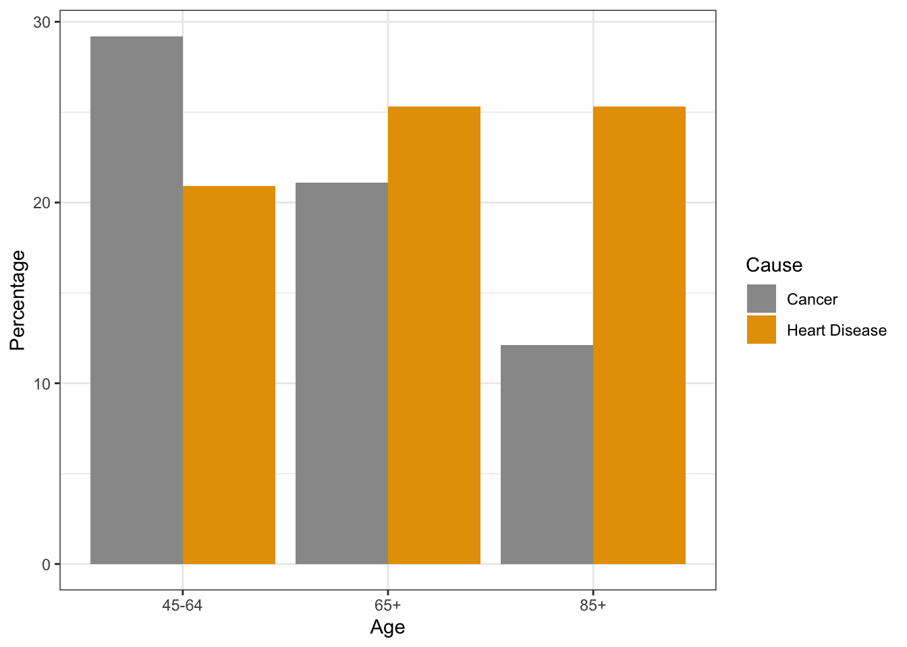

9 Late Adulthood
Late adulthood spans the time when we reach our mid-sixties until death. This is the longest developmental stage across the lifespan. In this chapter, we will consider the growth in numbers for those in late adulthood, how that number is expected to change in the future, and the implications this will bring to both the United States and worldwide. We will also examine several theories of human aging, the physical, cognitive, and socioemotional changes that occur with this population, and the vast diversity among those in this developmental stage. Further, ageism and many of the myths associated with those in late adulthood will be explored.
9.1 Late Adulthood Definition and Demographics
Learning Objectives: Late Adulthood Definition and Demographics
Describe the increase in the number of individuals who are currently identified as late adults
Describe the increase in late adulthood worldwide
Explain gender and ethnic differences in the number of individuals identified as late adults
Explain the different ways developmental psychologists describe aging
Explain the difference between life span and life expectancy
Define the four age categories for late adulthood
Explain what factors contribute to becoming a centenarian
9.1.1 Late Adulthood in America
Late adulthood, which includes those aged 65 years and above, is the fastest growing age division of the United States population (Gatz, Smyer, & DiGilio, 2016). Currently, one in seven Americans is 65 years of age or older. The first of the baby boomers (born from 1946-1964) turned 65 in 2011, and approximately 10,000 baby boomers turn 65 every day. By the year 2050, almost one in four Americans will be over 65, and will be expected to live longer than previous generations. According to the U. S. Census Bureau (2014b) a person who turned 65 in 2015 can expect to live another 19 years, which is 5.5 years longer than someone who turned 65 in 1950. This increasingly aged population has been referred to as the “Graying of America”. This “graying” is already having significant effects on the nation in many areas, including work, health care, housing, social security, caregiving, and adaptive technologies. Table 9.1 shows the 2012, 2020, and 2030 projected percentages of the U.S. population ages 65 and older.
| Percent of United States Population | 2012 | 2020 | 2030 |
|---|---|---|---|
| 65 Years and Older | 13.7% | 16.8% | 20.3% |
| 65-69 | 4.5% | 5.4% | 5.6% |
| 70-74 | 3.2% | 4.4% | 5.2% |
| 75-79 | 2.4% | 3.0% | 4.1% |
| 80-84 | 1.8% | 1.9% | 2.9% |
| 85 Years and Older | 1.9% | 2.0% | 2.5% |
9.1.2 The “Graying” of the World
Even though the United States is aging, it is still younger than most other developed countries (Ortman, Velkoff, & Hogan, 2014). Germany, Italy, and Japan all had at least 20% of their population aged 65 and over in 2012, and Japan had the highest percentage of elderly. Additionally, between 2012 and 2050, the proportion aged 65 and over is projected to increase in all developed countries. Japan is projected to continue to have the oldest population in 2030 and 2050. Table 9.2 shows the percentages of citizens aged 65 and older in select developed countries in 2012 and projected for 2030 and 2050.
| Percent of Population 65 and Older | 2012 | 2030 | 2050 |
|---|---|---|---|
| America | 13.7% | 20.3% | 22% |
| Japan | 24% | 32.2% | 40% |
| Germany | 20% | 27.9% | 30% |
| Italy | 20% | 25.5% | 31% |
| Canada | 16.5% | 25% | 26.5% |
| Russia | 13% | 20% | 26% |
According to the National Institute on Aging (NIA, 2015b), there are 524 million people over 65 worldwide. This number is expected to increase from 8% to 16% of the global population by 2050. Between 2010 and 2050, the number of older people in less developed countries is projected to increase more than 250%, compared with only a 71% increase in developed countries. Declines in fertility and improvements in longevity account for the percentage increase for those 65 years and older. In more developed countries, fertility fell below the replacement rate of two live births per woman by the 1970s, down from nearly three children per woman around 1950. Fertility rates also fell in many less developed countries from an average of six children in 1950 to an average of two or three children in 2005. In 2006, fertility was at or below the two-child replacement level in 44 less developed countries (NIA, 2015d).
{kind=link}
In total number, the United States is projected to have a larger older population than the other developed nations, but a smaller older population compared with China and India, the world’s two most populous nations (Ortman et al., 2014). By 2050, China’s older population is projected to grow larger than the total U.S. population today. As the population ages, concerns grow about who will provide for those requiring long-term care. In 2000, there were about 10 people 85 and older for every 100 persons between ages 50 and 64. These midlife adults are the most likely care providers for their aging parents. The number of old requiring support from their children is expected to more than double by the year 2040 (He, Sengupta, Velkoff, & DeBarros, 2005). These families will certainly need external physical, emotional, and financial support in meeting this challenge.
9.1.3 Life Expectancy vs Lifespan
Lifespan or Maximum Lifespan is referred to as the greatest age reached by any member of a given population (or species). For humans, the lifespan is currently between 120 and 125. Life expectancy is defined as the average number of years that members of a population (or species) live. According to the World Health Organization (WHO) (2019) global life expectancy for those born in 2019 is 72.0 years, with females reaching 74.2 years and males reaching 69.8 years. Women live longer than men around the world, and the gap between the sexes has remained the same since 1990. Overall life expectancy ranges from 61.2 years in the WHO African Region to 77.5 years in the WHO European Region. Global life expectancy increased by 5.5 years between 2000 and 2016. Improvements in child survival and access to antiretroviral medication for the treatment of HIV are considered factors for the increase. However, life expectancy in low-income countries (62.7 years) is 18.1 years lower than in high-income countries (80.8 years). In high-income countries, the majority of people who die are old, while in low-income countries almost one in three deaths are in children under 5 years of age. According to the Central Intelligence Agency (2019) the United States ranks 45th in the world for life expectancy.
World Healthy Life Expectancy: A better way to appreciate the diversity of people in late adulthood is to go beyond chronological age and examine how well the person is aging. Many in late adulthood enjoy better health and social well-being than average and would be aging at an optimal level. In contrast, others experience poor health and dependence to a greater extent than would be considered normal. When looking at large populations, the WHO (2019) measures how many equivalent years of full health on average a newborn baby is expected to have. This age takes into account current age-specific mortality, morbidity, and disability risks and is referred to as The Healthy Life Expectancy. In 2016, the global Healthy Life Expectancy was 63.3 years up from 58.5 years in 2000. The WHO African Region had the lowest Healthy Life Expectancy at 53.8 years, while the WHO Western Pacific Region had the highest at 68.9 years.
Life Expectancy in America: The overall life expectancy for a baby born in 2017 in the United States is 78.6 years, decreasing from 78.7 years in 2016 and 78.8 years in 2015 (Arias & Xu, 2019). The decrease from 2016 occurred for males, changing from 76.2 years to 76.1 years, while it did not change for females (81.1 years). Life expectancy at birth decreased by 0.1 year for the non-Hispanic white population (78.6 to 78.5). Life expectancy at birth did not change from 2016 for the non-Hispanic black population (74.9), and the Hispanic population (81.8). Before this two-year decline, life expectancy had been increasing. Reasons given by the CDC for this decrease in life expectancy include deaths from drug overdoses, an increase in liver disease, and a rise in suicide rates (Saiidi, 2019). Figure 9.2 shows the United States life expectancy from 2006-2017 by ethnicity and sex.
American Healthy Life Expectancy: To determine the current United States Healthy Life Expectancy (HLE), factors were evaluated in 2007-2009 to determine how long an individual currently at age 65 will continue to experience good health (CDC, 2013). The highest Healthy Life Expectancy (HLE) was observed in Hawaii with 16.2 years of additional good health, and the lowest was in Mississippi with only 10.8 years of additional good health. Overall, the lowest HLE was among southern states. Females had a greater HLE than males at age 65 years in every state and DC. HLE was greater for whites than for blacks in DC and all states from which data were available, except in Nevada and New Mexico.
Although improvements have occurred in overall life expectancy, children born in America today may be the first generation to have a shorter life span than their parents. Much of this decline has been attributed to the increase in sedentary lifestyle and obesity. Since 1980, the obesity rate for children between 2 and 19 years old has tripled, as 20.5% of children were obese in 2014 compared with 5% in 1980 (American Medical Association, 2016). Obesity in children is associated with many health problems, including high blood pressure, type 2 diabetes, elevated blood cholesterol levels, and psychological concerns including low self-esteem, negative body image and depression. Excess weight is associated with an earlier risk of obesity-related diseases and death. In 2007, former Surgeon General Richard Carmona stated, “Because of the increasing rates of obesity, unhealthy eating habits and physical inactivity, we may see the first generation that will be less healthy and have a shorter life expectancy than their parents” (p. 1).
9.1.4 Gender Differences in Life Expectancy
Biological Explanations: Biological differences in sex chromosomes and different pattern of gene expression is theorized as one reason why females live longer (Chmielewski, Boryslawski, & Strzelec, 2016). Males are heterogametic (XY), whereas females are homogametic (XX) with respect to the sex chromosomes. Males can only express their X chromosome genes that come from the mother, while females have an advantage by selecting the “better” X chromosome from their mother or father, while inactivating the “worse” X chromosome. This process of selection for “better” genes is impossible in males and results in the greater genetic and developmental stability of females.
In terms of developmental biology, women are the “default” sex, which means that the creation of a male individual requires a sequence of events at a molecular level. According to Chmilewski et al. (2016): These events are initiated by the activity of the SRY gene located on the Y chromosome. This activity and change in the direction of development results in a greater number of disturbances and developmental disorders, because the normal course of development requires many different factors and mechanisms, each of which must work properly and at a specific stage of the development. (p. 134)
Men are more likely to contract viral and bacterial infections, and their immunity at the cellular level decreases significantly faster with age. Although women are slightly more prone to autoimmune and inflammatory diseases, such as rheumatoid arthritis, the gradual deterioration of the immune system is slower in women (Caruso, Accardi, Virruso, & Candore, 2013; Hirokawa et al., 2013).
Looking at the influence of hormones, estrogen levels in women appear to have a protective effect on their heart and circulatory systems (Viña, Borrás, Gambini, Sastre, & Pallardó, 2005). Estrogens also have antioxidant properties that protect against harmful effects of free radicals, which damage cell components, cause mutations, and are in part responsible for the aging process. Testosterone levels are higher in men than in women and are related to more frequent cardiovascular and immune disorders. The level of testosterone is also responsible, in part, for male behavioral patterns, including increased level of aggression and violence (Martin, Poon, & Hagberg, 2011; Borysławski & Chmielewski, 2012). Another factor responsible for risky behavior is the frontal lobe of the brain. The frontal lobe, which controls judgment and consideration of an action’s consequences, develops more slowly in boys and young men. This lack of judgment affects lifestyle choices, and consequently many more boys and men die by smoking, excessive drinking, accidents, drunk driving, and violence (Shmerling, 2016).
Lifestyle Factors: Certainly not all the reasons women live longer than men are biological. As previously mentioned, male behavioral patterns and lifestyle play a significant role in the shorter lifespans for males. One significant factor is that males work in more dangerous jobs, including police, fire fighters, and construction, and they are more exposed to violence. According to the Federal Bureau of Investigation (2014) there were 11,961 homicides in the U.S. in 2014 (last year for full data) and of those 77% were males. Males are also more than three times as likely to commit suicide (CDC, 2016a). Further, males serve in the military in much larger numbers than females. According to the Department of Defense (2015), in 2014 83% of all officers in the Services (Navy, Army, Marine Corps and Air Force) were male, while 85% of all enlisted service members were male.
Additionally, men are less likely than women to have health insurance, develop a regular relationship with a doctor, or seek treatment for a medical condition (Scott, 2015). As mentioned in the middle adulthood chapter, women are more religious than men, which is associated with healthier behaviors (Greenfield, Vaillant & Marks, 2009). Lastly, social contact is also important as loneliness is considered a health hazard. Nearly 20% of men over 50 have contact with their friends less than once a month, compared to only 12% of women who see friends that infrequently (Scott, 2015). Overall, men’s lower life expectancy appears to be due to both biological and lifestyle factors.
9.1.5 Age Categories in Late Adulthood
There have been many ways to categorize the ages of individuals in late adulthood. In this chapter, we will be dividing the stage into four categories: Young–old (65-74), old-old (75-84), the oldest-old (85-99), and centenarians (100+) for comparison. These categories are based on the conceptions of aging including, biological, psychological, social, and chronological differences. They also reflect the increase in longevity of those living to this latter stage.
Young-old: Generally, this age span includes many positive aspects and is considered the “golden years” of adulthood. When compared to those who are older, the young-old experience relatively good health and social engagement (Smith, 2000), knowledge and expertise (Singer, Verhaeghen, Ghisletta, Lindenberger, & Baltes, 2003), and adaptive flexibility in daily living (Riediger, Freund, & Baltes, 2005). The young-old also show strong performance in attention, memory, and crystallized intelligence. In fact, those identified as young-old are more similar to those in midlife. This group is less likely to require long-term care, to be dependent or poor, and more likely to be married, working for pleasure rather than income, and living independently. Overall, those in this age period feel a sense of happiness and emotional well-being that is better than at any other period of adulthood (Carstensen, Fung, & Charles, 2003; George, 2009; Robins & Trzesniewski, 2005). It is also an unusual age in that people are considered both in old age and not in old age (Rubinstein, 2002).
Old-old: Adults in this age period are likely to be living independently, but often experience physical impairments as chronic diseases increase after age 75. For example, congestive heart failure is 10 times more common in people 75 and older, than in younger adults (National Library of Medicine, 2019). In fact, half of all cases of heart failure occur in people after age 75 (Strait & Lakatta, 2012). In addition, hypertension and cancer rates are also more common after 75, but because they are linked to lifestyle choices, they typically can be can prevented, lessoned, or managed (Barnes, 2011b).
Oldest-old: This age group often includes people who have more serious chronic ailments among the older adult population. In the U.S., the oldest-old represented 14% of the older adult population in 2015 (He, Goodkind, & Kowal, 2016). This age group is one of the fastest growing worldwide and is projected to increase more than 300% over its current levels (NIA, 2015b). The oldest-old are projected to be nearly 18 million by 2050, or about 4.5% of the U. S. population, compared with less than 2% of the population today. Females comprise more than 60% of those 85 and older, but they also suffer from more chronic illnesses and disabilities than older males (Gatz et al., 2016).
While this age group accounts for only 2% of the U. S. population, it accounts for 9% of all hospitalizations (Levant, Chari & DeFrances, 2015). In a study of over 64,000 patients age 65 and older who visited an emergency department, the admission rates increased with age. Thirty-five% of admissions after an emergency room visit were the young old, almost 43% were the old-old, and nearly half were the oldest-old (Lee, Oh, Park, Choi, & Wee, 2018). The mortality rate was also higher with age. The most common reasons for hospitalization for the oldest-old were congestive heart failure, pneumonia, urinary tract infections, septicemia, stroke, and hip fractures. In recent years, hospitalizations for many of these medical problems have been reduced. However, hospitalization for urinary tract infections and septicemia has increased for those 85 and older Levant et al., 2015).
Those 85 and older are more likely to require long-term care and to be in nursing homes than the youngest-old. Almost 50% of the oldest-old require some assistance with daily living activities (APA, 2016). However, most still live in the community rather than a nursing home, as shown in Figure 9.7 (Stepler, 2016b). The oldest-old are less likely to be married and living with a spouse compared with the majority of the young-old (APA, 2016; Stepler, 2016c). As can be seen, in Figure 9.8, gender is also an important factor in the likelihood of being married or living with one’s spouse.
Centenarians: A segment of the oldest-old are centenarians, that is, 100 and older, and some are also referred to as supercentarians, those 110 and older (Wilcox, Wilcox & Ferrucci, 2008). In 2015 there were nearly half a million centenarians worldwide, and it is estimated that this age group will grow to almost 3.7 million by 2050. The U. S. has the most centenarians, but Japan and Italy have the most per capita (Stepler, 2016e). Most centenarians tended to be healthier than many of their peers as they were growing older, and often there was a delay in the onset of any serious disease or disability until their 90s. Additionally, 25% reached 100 with no serious chronic illnesses, such as depression, osteoporosis, heart disease, respiratory illness, or dementia (Ash et al. 2015). Centenarians are more likely to experience a rapid terminal decline in later life, meaning that for most of their adulthood, and even older adult years, they are relatively healthy in comparison to many other older adults (Ash et al., 2015; Wilcox et al., 2008). According to Guinness World Records (2016), Jeanne Louise Calment has been documented to be the longest living person at 122 years and 164 days old (See Figure 9.2).

9.2 Physical Development in Late Adulthood
Learning Objectives: Physical Development in Late Adulthood
Describe different theories of aging
Describe the changes in physical appearance in late adulthood
Describe the sensory changes in late adulthood
Describe chronic health conditions during late adulthood
Describe the importance of nutrition and exercise in late adulthood
Describe the physical and functional changes in the brain during late adulthood
Explain what happens in Parkinson’s disease
Explain how sleep patterns change in late adulthood
Explain how sexuality changes in late adulthood
9.2.1 Theories of Aging
Why do we age? There are many theories that attempt to explain how we age, however, researchers still do not fully understand what factors contribute to the human lifespan (Jin, 2010). Research on aging is constantly evolving and includes a variety of studies involving genetics, biochemistry, animal models, and human longitudinal studies (NIA, 2011a). According to Jin (2010), modern biological theories of human aging involve two categories. The first is Programmed Theories that follow a biological timetable, possibly a continuation of childhood development. This timetable would depend on “changes in gene expression that affect the systems responsible for maintenance, repair, and defense responses,” (p. 72). The second category includes Damage or Error Theories which emphasize environmental factors that cause cumulative damage in organisms. Examples from each of these categories will be discussed.
Genetics: One’s genetic make-up certainly plays a role in longevity, but scientists are still attempting to identify which genes are responsible. Based on animal models, some genes promote longer life, while other genes limit longevity. Specifically, longevity may be due to genes that better equip someone to survive a disease. For others, some genes may accelerate the rate of aging, while others decrease the rate. To help determine which genes promote longevity and how they operate, researchers scan the entire genome and compare genetic variants in those who live longer with those who have an average or shorter lifespan. For example, a National Institutes of Health study identified genes possibly associated with blood fat levels and cholesterol, both risk factors for coronary disease and early death (NIA, 2011a). Researchers believe that it is most likely a combination of many genes that affect the rate of aging.
Evolutionary Theory: Evolutionary psychology emphasizes the importance of natural selection; that is, those genes that allow one to survive and reproduce will be more likely to be transmitted to offspring. Genes associated with aging, such as Alzheimer Disease, do not appear until after the individual has passed their main reproductive years. Consequently, natural selection has not eliminated these damaging disorders from the gene pool. If these detrimental disorders occurred earlier in the development cycle, they may have been eliminated already (Gems, 2014).
Cellular Clock Theory: This theory suggests that biological aging is due to the fact that normal cells cannot divide indefinitely. This is known as the Hayflick limit, and is evidenced in cells studied in test tubes, which divide about 40-60 times before they stop (Bartlett, 2014). But what is the mechanism behind this cellular senescence? At the end of each chromosomal strand is a sequence of DNA that does not code for any particular protein, but protects the rest of the chromosome, which is called a telomere. With each replication, the telomere gets shorter. Once it becomes too short the cell does one of three things. It can stop replicating by turning itself off, called cellular senescence. It can stop replicating by dying, called apoptosis. Or, as in the development of cancer, it can continue to divide and become abnormal. Senescent cells can also create problems. While they may be turned off, they are not dead, thus they still interact with other cells in the body and can lead to an increase risk of disease. When we are young, senescent cells may reduce our risk of serious diseases such as cancer, but as we age they increase our risk of such problems (NIA, 2011a). Understanding why cellular senescence changes from being beneficial to being detrimental is still under investigation. The answer may lead to some important clues about the aging process.
DNA Damage: Over time DNA, which contains the genetic code for all organisms, accumulates damage. This is usually not a concern as our cells are capable of repairing damage throughout our life. Further, some damage is harmless. However, some damage cannot be repaired and remains in our DNA. Scientists believe that this damage, and the body’s inability to fix itself, is an important part of aging (NIA, 2011a). As DNA damage accumulates with increasing age, it can cause cells to deteriorate and malfunction (Jin, 2010). Factors that can damage DNA include ultraviolet radiation, cigarette smoking, and exposure to hydrocarbons, such as auto exhaust and coal (Dollemore, 2006).
Mitochondrial Damage: Damage to mitochondrial DNA can lead to a decaying of the mitochondria, which is a cell organelle that uses oxygen to produce energy from food. The mitochondria convert oxygen to adenosine triphosphate (ATP) which provides the energy for the cell. When damaged, mitochondria become less efficient and generate less energy for the cell and can lead to cellular death (NIA, 2011a).
Free Radicals: When the mitochondria uses oxygen to produce energy, they also produce potentially harmful byproducts called oxygen free radicals (NIA, 2011a). The free radicals are missing an electron and create instability in surrounding molecules by taking electrons from them. There is a snowball effect (A takes from B and then B takes from C, etc.) that creates more free radicals which disrupt the cell and causes it to behave abnormally (See Figure 9.11). Some free radicals are helpful as they can destroy bacteria and other harmful organisms, but for the most part they cause damage in our cells and tissue. Free radicals are identified with disorders seen in those of advanced age, including cancer, atherosclerosis, cataracts, and neurodegeneration. Some research has supported adding antioxidants to our diets to counter the effects of free radical damage because the antioxidants can donate an electron that can neutralize damaged molecules. However, the research on the effectiveness of antioxidants is not conclusive (Harvard School of Public Health, 2016).


{kind=link}
Immune and Hormonal Stress Theories: Ever notice how quickly U.S. presidents seem to age? Before and after photos reveal how stress can play a role in the aging process. When gerontologists study stress, they are not just considering major life events, such as unemployment, death of a loved one, or the birth of a child. They are also including metabolic stress, the life sustaining activities of the body, such as circulating the blood, eliminating waste, controlling body temperature, and neuronal firing in the brain. In other words, all the activities that keep the body alive also create biological stress.
To understand how this stress affects aging, researchers note that both problems with the innate and adaptive immune system play a key role. The innate immune system is made up of the skin, mucous membranes, cough reflex, stomach acid, and specialized cells that alert the body of an impending threat. With age these cells lose their ability to communicate as effectively, making it harder for the body to mobilize its defenses. The adaptive immune system includes the tonsils, spleen, bone marrow, thymus, circulatory system and the lymphatic system that work to produce and transport T cells. T-cells, or lymphocytes, fight bacteria, viruses, and other foreign threats to the body. T-cells are in a “naïve” state before they are programmed to fight an invader and become “memory cells”. These cells now remember how to fight a certain infection should the
body ever come across this invader again. Memory cells can remain in your body for many decades, and why the measles vaccine you received as a child is still protecting you from this virus today. As older adults produce fewer new T-cells to be programmed, they are less able to fight off new threats and new vaccines work less effectively. The reason why the shingles vaccine works well with older adults is because they already have some existing memory cells against the varicella virus. The shingles vaccine is acting as a booster (NIA, 2011a).
Hormonal Stress Theory, also known as Neuroendocrine Theory of Aging, suggests that as we age the ability of the hypothalamus to regulate hormones in the body begins to decline leading to metabolic problems (American Federation of Aging Research (AFAR) 2011). This decline is linked to excess of the stress hormone cortisol. While many of the body’s hormones decrease with age, cortisol does not (NIH, 2014a). The more stress we experience, the more cortisol released, and the more hypothalamic damage that occurs. Changes in hormones have been linked to several metabolic and hormone related problems that increase with age, such as diabetes (AFAR, 2011), thyroid problems (NIH, 2013), osteoporosis, and orthostatic hypotension (NIH, 2014a).
9.2.2 Physical Changes of Aging
The Baltimore Longitudinal Study on Aging (BLSA) (NIA, 2011b) began in 1958 and has traced the aging process in 1,400 people from age 20 to 90. Researchers from the BLSA have found that the aging process varies significantly from individual to individual and from one organ system to another. However, some key generalization can be made including:
Heart muscles thicken with age
Arteries become less flexible
Lung capacity diminishes
Kidneys become less efficient in removing waste from the blood
Bladder loses its ability to store urine
Brain cells also lose some functioning, but new neurons can also be produced.
Many of these changes are determined by genetics, lifestyle, and disease. Other changes in late adulthood include:
Body Changes: Everyone’s body shape changes naturally as they age. According to the National Library of Medicine (2014) after age 30 people tend to lose lean tissue, and some of the cells of the muscles, liver, kidney, and other organs are lost. Tissue loss reduces the amount of water in your body and bones may lose some of their minerals and become less dense (a condition called osteopenia in the early stages and osteoporosis in the later stages). The amount of body fat goes up steadily after age 30, and older individuals may have almost one third more fat compared to when they were younger. Fat tissue builds up toward the center of the body, including around the internal organs.
Skin, Hair and Nails: With age skin becomes thinner, less elastic, loses fat, and no longer looks plump and smooth. Veins and bones can be seen easier, and scratches, cuts, and bumps can take longer to heal. Years exposed to the sun may lead to wrinkles, dryness, age spots, and cancer. Older people may bruise more easily, and it can take longer for these bruises to heal. Some medicines or illnesses may also cause bruising. Gravity can cause skin to sag and wrinkle, and smoking can wrinkle the skin. Also, seen in older adults are age spots, previously called “liver spots”. They look like flat, brown spots and are often caused by years in the sun. Skin tags are small, usually flesh-colored growths of skin that have a raised surface. They become common as people age, especially for women, but both age spots and skin tags are harmless (NIA, 2015f).
Nearly everyone has hair loss as they age, and the rate of hair growth slows down as many hair follicles stop producing new hairs (U.S. National Library of Medicine, 2019). The loss of pigment and subsequent graying begun in middle adulthood continues in late adulthood. The body and face also lose hair. Facial hair may grow coarser. For women this often occurs around the chin and above the upper lip. For men the hair of the eyebrows, ears, and nose may grow longer. Nails, particularly toenails, may become hard and thick. Lengthwise ridges may develop in the fingernails and toenails. However, pits, lines, changes in shape or color should be checked by a healthcare provider as they can be related to nutritional deficiencies or kidney disease (U.S. National Library of Medicine).
Height and Weight: The tendency to become shorter as one ages occurs among all races and both sexes. Height loss is related to aging changes in the bones, muscles, and joints. People typically lose almost one-half inch every 10 years after age 40, and height loss is even more rapid after age 70. A total of 1 to 3 inches in height is lost with aging. Changes in body weight vary for men and woman. Men often gain weight until about age 55, and then begin to lose weight later in life, possibly related to a drop in the male sex hormone testosterone. Women usually gain weight until age 65, and then begin to lose weight. Weight loss later in life occurs partly because fat replaces lean muscle tissue, and fat weighs less than muscle. Diet and exercise are important factors in weight changes in late adulthood (National Library of Medicine, 2014).
Sarcopenia is the loss of muscle tissue as a natural part of aging. Sarcopenia is most noticeable in men, and physically inactive people can lose as much as 3% to 5% of their muscle mass each decade after age 30, but even when active muscle loss still occurs (Webmd, 2016). Symptoms include a loss of stamina and weakness, which can decrease physical activity and subsequently further shrink muscles. Sarcopenia typically happens faster around age 75, but it may also speed up as early as 65 or as late as 80. Factors involved in sarcopenia include a reduction in nerve cells responsible for sending signals to the muscles from the brain to begin moving, a decrease in the ability to turn protein into energy, and not receiving enough calories or protein to sustain adequate muscle mass. Any loss of muscle is important because it lessens strength and mobility, and sarcopenia is a factor in frailty and the likelihood of falls and fractures in older adults. Maintaining strong leg and heart muscles are important for independence. Weight-lifting, walking, swimming, or engaging in other cardiovascular exercises can help strengthen the muscles and prevent atrophy.
9.2.3 Sensory Changes in Late Adulthood
Vision: In late adulthood, all the senses show signs of decline, especially among the oldest-old. In the last chapter, you read about the visual changes that were beginning in middle adulthood, such as presbyopia, dry eyes, and problems seeing in dimmer light. By later adulthood these changes are much more common. Three serious eyes diseases are more common in older adults: Cataracts, macular degeneration, and glaucoma. Only the first can be effectively cured in most people.
Cataracts are a clouding of the lens of the eye. The lens of the eye is made up of mostly water and protein. The protein is precisely arranged to keep the lens clear, but with age some of the protein starts to clump. As more of the protein clumps together the clarity of the lens is reduced. While some adults in middle adulthood may show signs of cloudiness in the lens, the area affected is usually small enough to not interfere with vision. More people have problems with cataracts after age 60 (NIH, 2014b) and by age 75, 70% of adults will have problems with cataracts (Boyd, 2014). Cataracts also cause a discoloration of the lens, tinting it more yellow and then brown, which can interfere with the ability to distinguish colors such as black, brown, dark blue, or dark purple.
Risk factors besides age include certain health problems such as diabetes, high blood pressure, and obesity, behavioral factors such as smoking, other environmental factors such as prolonged exposure to ultraviolet sunlight, previous trauma to the eye, long-term use of steroid medication, and a family history of cataracts (NEI, 2016a; Boyd, 2014). Cataracts are treated by removing and replacing the lens of the eye with a synthetic lens. In developed countries, such as the United States, cataracts can be easily treated with surgery. However, in developing countries, access to such operations are limited, making cataracts the leading cause of blindness in late adulthood in the least developed countries (Resnikoff, Pascolini, Mariotti & Pokharel, 2004). As shown in Figure 9.16, areas of the world with limited medical treatment for cataracts often results in people living more years with a serious disability. For example, of those living in the darkest red color on the map, more than 990 out of 100,00 people have a shortened lifespan due to the disability caused by cataracts.
Older adults are also more likely to develop age-related macular degeneration, which is the loss of clarity in the center field of vision, due to the deterioration of the macula, the center of the retina. Macular degeneration does not usually cause total vision loss, but the loss of the central field of vision can greatly impair day-to-day functioning. There are two types of macular degeneration: dry and wet. The dry type is the most common form and occurs when tiny pieces of a fatty protein called drusen form beneath the retina. Eventually the macular becomes thinner and stops working properly (Boyd, 2016). About 10% of people with macular degeneration have the wet type, which causes more damage to their central field of vision than the dry form. This form is caused by an abnormal development of blood vessels beneath the retina. These vessels may leak fluid or blood causing more rapid loss of vision than the dry form.
The risk factors for macular degeneration include smoking, which doubles your risk (NIH, 2015a); race, as it is more common among Caucasians than African Americans or Hispanics/Latinos; high cholesterol; and a family history of macular degeneration (Boyd, 2016). At least 20 different genes have been related to this eye disease, but there is no simple genetic test to determine your risk, despite claims by some genetic testing companies (NIH, 2015a). At present, there is no effective treatment for the dry type of macular degeneration. Some research suggests that certain patients may benefit from a cocktail of certain antioxidant vitamins and minerals, but the results are mixed at best. They are not a cure for the disease nor will they restore the vision that has been lost. This “cocktail” can slow the progression of visual loss in some people (Boyd, 2016; NIH, 2015a). For the wet type medications that slow the growth of abnormal blood vessels, and surgery, such as laser treatment to destroy the abnormal blood vessels may be used. Only 25% of those with the wet version may see improvement with these procedures (Boyd, 2016).
A third vision problem that increases with age is glaucoma, which is the loss of peripheral vision, frequently due to a buildup of fluid in eye that damages the optic nerve. As you age the pressure in the eye may increase causing damage to the optic nerve. The exterior of the optic nerve receives input from retinal cells on the periphery, and as glaucoma progresses more and more of the peripheral visual field deteriorates toward the central field of vision. In the advanced stages of glaucoma, a person can lose their sight. Fortunately, glaucoma tends to progresses slowly (NEI, 2016b).


{kind=link}
{kind=link}
{kind=link}
{kind=link}
Glaucoma is the most common cause of blindness in the U.S. (NEI, 2016b). African Americans over age 40, and everyone else over age 60 has a higher risk for glaucoma. Those with diabetes, and with a family history of glaucoma also have a higher risk (Owsley et al., 2015). There is no cure for glaucoma, but its rate of progression can be slowed, especially with early diagnosis. Routine eye exams to measure eye pressure and examination of the optic nerve can detect both the risk and presence of glaucoma (NEI, 2016b). Those with elevated eye pressure are given medicated eye drops. Reducing eye pressure lowers the risk of developing glaucoma or slow its progression in those who already have it.
Hearing: As you read in Chapter 8, our hearing declines both in terms of the frequencies of sound we can detect, and the intensity of sound needed to hear as we age. These changes continue in late adulthood. Almost 1 in 4 adults aged 65 to 74 and 1 in 2 aged 75 and older have disabling hearing loss (NIH, 2016). The callout below lists some common signs of hearing loss.
Common Signs of Hearing Loss
Have trouble hearing over the telephone
Find it hard to follow conversations when two or more people are talking
Often ask people to repeat what they are saying
Need to turn up the TV volume so loud that others complain
Have a problem hearing because of background noise
Think that others seem to mumble
Cannot understand when women and children are speaking
Adapted from NIA, 2015c
Presbycusis is a common form of hearing loss in late adulthood that results in a gradual loss of hearing. It runs in families and affects hearing in both ears (NIA, 2015c). Older adults may also notice tinnitus, a ringing, hissing, or roaring sound in the ears. The exact cause of tinnitus is unknown, although it can be related to hypertension and allergies. It may come and go or persist and get worse over time (NIA, 2015c). The incidence of both presbycusis and tinnitus increase with age and males have higher rates of both around the world (McCormak, Edmondson-Jones, Somerset, & Hall, 2016).
Your auditory system has two jobs: To help you to hear, and to help you maintain balance. Your balance is controlled by the brain receiving information from the shifting of hair cells in the inner ear about the position and orientation of the body. With age this function of the inner ear declines which can lead to problems with balance when sitting, standing, or moving (Martin, 2014).
Taste and Smell: Our sense of taste and smell are part of our chemical sensing system. Our sense of taste, or gustation, appears to age well. Normal taste occurs when molecules that are released by chewing food stimulate taste buds along the tongue, the roof of the mouth, and in the lining of the throat. These cells send messages to the brain, where specific tastes are identified. After age 50 we start to lose some of these sensory cells. Most people do not notice any changes in taste until ones 60s (NIH: Senior Health, 2016b). Given that the loss of taste buds is very gradual, even in late adulthood, many people are often surprised that their loss of taste is most likely the result of a loss of smell.
| Presbyosmia | Smell loss due to aging |
| Hyposmia | Loss of only certain odors |
| Anosmia | Total loss of smell |
| Dysosmia | Change in the perception of odors. Familiar odors are distorted. |
| Phantosmia | Smell odors that are not present |
Our sense of smell, or olfaction, decreases more with age, and problems with the sense of smell are more common in men than in women. Almost 1 in 4 males in their 60s have a disorder with the sense of smell, while only 1 in 10 women do (NIH: Senior Health, 2016b). This loss of smell due to aging is called presbyosmia. Olfactory cells are located in a small area high in the nasal cavity. These cells are stimulated by two pathways; when we inhale through the nose, or via the connection between the nose and the throat when we chew and digest food. It is a problem with this second pathway that explains why some foods such as chocolate or coffee seem tasteless when we have a head cold. There are several types of loss of smell. Total loss of smell, or anosmia, is extremely rare.
Problems with our chemical senses can be linked to other serious medical conditions such as Parkinson’s, Alzheimer’s, or multiple sclerosis (NIH: Senior Health, 2016a). Any sudden change should be checked out. Loss of smell can change a person’s diet, with either a loss of enjoyment of food and eating too little for balanced nutrition or adding sugar and salt to foods that are becoming blander to the palette.
Touch: Research has found that with age, people may experience reduced or changed sensations of vibration, cold, heat, pressure, or pain (Martin, 2014). Many of these changes are also aligned with a number of medical conditions that are more common among the elderly, such as diabetes. However, there are changes in the touch sensations among healthy older adults. The ability to detect changes in pressure have been shown to decline with age, with it being more pronounced by the 6th decade and diminishing further with advanced age (Bowden & McNelty, 2013). Yet, there is considerable variability, with almost 40% showing sensitivity that is comparable to younger adults (Thornbury & Mistretta, 1981). However, the ability to detect the roughness/smoothness or hardness/softness of an object shows no appreciable change with age (Bowden & McNulty, 2013). Those who show increasing insensitivity to pressure, temperature, or pain are at risk for injury (Martin, 2014).
Pain: According to Molton and Terrill (2014), approximately 60%-75% of people over the age of 65 report at least some chronic pain, and this rate is even higher for those individuals living in nursing homes. Although the presence of pain increases with age, older adults are less sensitive to pain than younger adults (Harkins, Price, & Martinelli, 1986). Farrell (2012) looked at research studies that included neuroimaging techniques involving older people who were healthy and those who experienced a painful disorder. Results indicated that there were age-related decreases in brain volume in those structures involved in pain. Especially noteworthy were changes in the prefrontal cortex, brainstem, and hippocampus. Women are more likely to identify feeling pain than men (Tsang et al., 2008). Women have fewer opioid receptors in the brain, and women also receive less relief from opiate drugs (Garrett, 2015). Because pain serves an important indicator that there is something wrong, a decreased sensitivity to pain in older adults is a concern because it can conceal illnesses or injuries requiring medical attention.
Chronic health problems, including arthritis, cancer, diabetes, joint pain, sciatica, and shingles are responsible for most of the pain felt by older adults (Molton & Terrill, 2014). Cancer is a special concern, especially “breakthrough pain” which is a severe pain that comes on quickly while a patient is already medicated with a long-acting painkiller. It can be very upsetting, and after one attack many people worry it will happen again. Some older individuals worry about developing an addiction to pain medication, but if medicine is taken exactly as prescribed, addiction should not be a concern (NIH, 2015b). Lastly, side effects from pain medicine including constipation, dry mouth, and drowsiness may occur that can adversely affect the elder’s life.
Some older individuals put off going to the doctor because they think pain is just part of aging and nothing can help. Of course, this is not true. Managing pain is crucial to ensure feelings of well-being for the older adult. When chronic pain is not managed, the individual will restrict their movements for fear of feeling pain or injuring themselves further. This lack of activity will result in more restriction, further decreased participation, and greater disability (Jensen, Moore, Bockow, Ehde, & Engel, 2011). A decline in physical activity because of pain is also associated with weight gain and obesity in adults (Strine, Hootman, Chapman, Okoro, & Balluz, 2005). Additionally, sleep and mood disorders, such as depression, can also occur (Moton & Terrill, 2014). Learning to cope effectively with pain is an important consideration in late adulthood and working with one’s primary physician or a pain specialist is recommended (NIH, 2015b).
For those 65 and older, 35% have a disability of some type. Figure 9.19 identifies the percentage of those who have a disability based on the type.
9.2.4 Nutrition
A healthy diet is necessary for older adults to increase mental acuteness, resistance to illness and disease, boost energy levels, improve immune system strength, recuperation speed, and have greater effectiveness in the management of chronic health problems (Mayer, 2016). The new MyPlate for Older Adults, a website from Tufts University, suggests that older adults should strive for 50% of their diet being fruits and vegetables; 25% grains, many of which should be whole grains; and 25% protein-rich foods, such as nuts, beans, fish, lean meat, poultry, and fat-free and low-fat dairy products such as milk, cheeses, and yogurts. Unfortunately, changes in sensory functions, such as smell and taste, along with loss of teeth, can derail an older adult’s ability to eat right. Older adults are likely to use salt and sugar to flavor foods that no longer taste the way they once did. Several government websites provide older adults with alternatives to the salt shaker to make foods more palatable.
9.2.5 Chronic Conditions
Chronic illnesses are illnesses that are ongoing, generally incurable conditions that require continuing medical attention and affect daily life. As individuals live longer, diseases that affect older individuals will become more prevalent, and the burden of chronic illness grows with age. Less than 50% of adults 50-64 have a chronic condition, 90% aged 75 and up do (Cohen, 2011). Almost 80% have at least one chronic disease, and 77% have at least two (National Council on Aging, 2019). Older women are more likely to have a chronic condition than are older men (83% vs. 88%) (CDC, 2009). Table 9.4 lists the percentage of older adults who have certain chronic illnesses based on the National Health Survey conducted in 2014. Other studies place the figure of diabetes in older adults at 26% (CDC, 2014).
| Chronic Condition | Percentage |
|---|---|
| High cholesterol | 58.2 |
| Hypertension | 56.7 |
| Arthritis | 48.7 |
| Cancer | 23.1 |
| Diabetes | 20.5 |
| Heart disease | 17.9 |
| Ulcers | 11.3 |
| Stroke | 7.2 |
| Asthma | 6.9 |
| Kidney disease | 5.1 |
| Chronic bronchitis | 5.0 |
| Emphysema | 4.0 |
Cancer and Major Cardiovascular Disease: As discussed in chapter 8, cancer and cardiovascular disease are the overall leading causes of death, and they are especially high reasons for death in middle and late adults. Figure 9.5 identifies the percentages of deaths due to cancer and cardiovascular disease for selected age groups in 2016; the most recent year for data (Heron, 2018).

| Cause | 45-64 | 65+ | 85+ |
|---|---|---|---|
| Cancer | 29.2 | 21.1 | 12.1 |
| Heart Disease | 20.9 | 25.3 | 25.3 |
Cancer: Advancing age is a significant risk factor for cancer, with persons over 65 accounting for 60% of newly diagnosed cancer and 70% of all cancer deaths (Berger et al., 2006). Additionally, more than 70% of the mortality associated with many cancers, including prostate, bladder, colon, uterus, pancreas, stomach, rectum and lung occur in patients 65 and older. Other conditions that affect the elderly can occur with cancer, including anemia, coronary artery diseases, congestive heart failure, chronic obstructive pulmonary diseases, renal insufficiency, cerebrovascular diseases, neurovascular complications of diabetes mellitus, and arthritis that restricts mobility (Balducci & Extermann, 2000). Comorbidity will complicate treatment.
Balducci and Extermann (2000) examined several concerns of cancer treatment in the elderly. With aging, there is a decline in multiple organ systems that can adversely affect the ability of medications to treat the cancer. Chemotherapy has been found to compromise the cognitive function of those being treated for cancer, and it may further exacerbate dementia and elderly cognitive declines. Frail individuals, defined as having limited life expectancy and near-to-exhausted functional reserves, are also not considered candidates for more toxic forms of chemotherapy. With cancer, the prevalence and risk of malnutrition are higher, and diminished visual and hearing function makes elderly cancer patients more susceptible to environmental injury. Screening for depression is also recommended because depression is associated with weight loss, failure to thrive, and may reduce the motivation to receive treatment. Consequently, depression has been associated with decreased survival rates in the elderly. Due to the projected increase in the total number of older patients with cancer, it is recommended that physicians and caretakers have expertise in both oncology and geriatrics (Berger et al., 2006).
Heart Disease: There are changes to the heart that happen with age, and some may increase a person’s risk of heart disease. These include stiffening blood vessels and valves, which may result in leaks or problems pumping blood out of the heart (NIA, 2012). As previously stated, heart disease is the leading cause of death for those in late adulthood (CDC, 2016b). There are different types of heart disease, and as already discussed in chapter 8, the most common is atherosclerosis, the buildup of fatty deposits or plaques in the walls of arteries. As plaque builds up, blood is unable to flow normally and bring oxygen throughout the body, including to the
heart. Depending on where the buildup is, atherosclerosis can cause a heart attack, leg pain, or a stroke. However, Atherosclerosis is not part of normal aging. Many of the problems older people have with their heart and blood vessels are caused by disease and not by aging. For example, an older heart can normally pump blood as strong as a younger heart, while less ability to pump blood is caused by disease. Therefore, leading a heart-healthy lifestyle is most important to keeping one’s heart strong in late adulthood.
Arthritis: Arthritis and other rheumatic conditions are the most common cause of disability among US adults and have been the most common cause of disability among US adults for the past 15 years (NIH: National Institute of Arthritis and Musculoskeletal and Skin Diseases, 2014). According to the NIH, approximately 62% of adults with arthritis are 65 years old and up. Almost 1 in 2 older adults with arthritis have some degree of mobility limitations, such as climbing stairs, walking, and grasping objects. The pain and other limitations of arthritis can also increase the risk of depression and other forms of mental distress. Osteoarthritis is the most common type of arthritis. “When the cartilage, the slick, cushioning surface on the ends of bones wears away, bone rubs against bone, causing pain, swelling and stiffness. Over time, joints can lose strength and pain may become chronic” (Arthritis Foundation, 2017, para 3). Common risk factors for osteoarthritis include genetics, obesity, age, previous injury, and other medical conditions.
Osteoporosis and Kyphosis: Osteoporosis is a disease that thins and weakens bones to the point that they become fragile and break easily. After age 50, 1 in 2 women and 1 in 4 men will experience an osteoporosis related fracture in their lifetime, often leading to hip, spine, and wrist fractures (Dailey & Cravedi, 2006). Broken hips are a very serious problem as we age. They greatly increase the risk of death, especially during the year after they break (NIH Senior Health, 2015). In the U.S., more than 53 million adults either already have osteoporosis or at a high risk due to low bone mass (NIH Senior Health, 2015). As bones weaken in the spine, adults gradually lose height and their posture becomes hunched over, which is called Kyphosis. Over time a bent spine can make it hard to walk or even sit up. Adults can prevent the loss of bone mass by eating a healthy diet with enough calcium and vitamin D, regularly exercising, limiting alcohol, and not smoking (National Osteoporosis Foundation, 2016).

Chronic obstructive pulmonary disease (COPD) is a progressive lung disease in which the airways become damaged making it difficult to breathe. COPD includes problems such as emphysema and chronic bronchitis (NIH Senior Health, 2013). COPD kills more than 120,000 people every year, making it one of the leading causes of death. COPD was once considered a “man’s disease”. However, since 2000, 58% of those with COPD are women and they comprise 8% of all women (American Lung Association, 2019). Research has indicated that women may be more susceptible to the effects of cigarette smoke due to having smaller lungs and estrogen worsening the effects.
Figure 9.22 compares healthy to damaged lungs due to COPD. As COPD develops slowly, people may not notice the early signs, and may attribute the shortness of breath to age or lack of physical exercise. Most people are not diagnosed until midlife or late adulthood. There is no cure as the damage cannot be reversed. Treatments aim at slowing further damage. Cigarette smoking is the leading cause of COPD, but other types of tobacco smoking, such as a pipe or cigar, can cause COPD, especially if the smoke is inhaled. Heavy or long-term exposure to second hand smoke can also lead to COPD (NIH Senior Health, 2013). COPD can also occur in people who have long term exposure to other environmental irritants, such as chemical fumes, and dust from the environment and workplace.
About 1 in every 1,600 to 5,000 people have a risk for COPD because of a recessive genetic condition known as alpha-1 antitrypsin (AAT) deficiency (NIH, 2011). AAT is a protein made in the liver that protects organs, especially the lungs, from the effects of other harmful proteins. In those with the genetic defect, the AAT protein created is the wrong shape and cannot leave the liver. This can lead to a heightened risk for lung disease, and even liver disease, as the excess of the AAT protein can lead to cirrhosis, which is a disease in which the liver becomes scarred and does not function properly. While some people with ATT deficiency are not affected and live a normal life, COPD is more likely to occur in such individuals if their lungs are exposed to environmental irritants.
Shingles: According to the National Institute on Aging (2015e), shingles is a disease that affects your nerves. Shingles is caused by the same virus as chicken pox, the varicella-zoster virus (VZV). After you recover from chickenpox, the virus continues to live in some of your nerve cells. It is usually inactive, and most adults live with VZV in their body and never get shingles. However, the virus will become active in one in three adults. Instead of causing chickenpox again, it produces shingles. A risk factor for shingles includes advanced age as people have a harder time fighting off infections as they get older. About half of all shingles cases are in adults age 60 or older, and the chance of getting shingles becomes much greater by age 70. Other factors that weaken an individual’s ability to fight infections, such as cancer, HIV infections, or other medical conditions, can put one at a greater risk for developing shingles.
Shingles results in pain, burning, tingling, or itching in the affected area, as well as a rash and blisters. Typically, shingles develops only on one side of the body or face and in a small area rather than all over. Most cases of shingles last 3 to 5 weeks. After the shingles rash goes away, some people may be left with ongoing pain, called post-herpetic neuralgia (PHN) in the area where the rash had been (NIA, 2015e). The older one is when getting shingles, the greater the chance of developing PHN. Some people with PHN find it hard to go about their daily activities, like dressing, cooking, and eating. They can also suffer from depression, anxiety and sleeplessness. Medicines can help with pain and usually PHN will disappear. Unfortunately, the blisters from shingles may become infected or leave a scar. Blisters near or in the eye can cause lasting eye damage or blindness. A brief paralysis of the face, hearing loss, and very rarely, swelling of the brain (encephalitis) can also occur. There is a shingles vaccine that is recommended for those aged 50 and older. Shingles is not contagious, but one can catch chickenpox from someone with shingles.
Beliefs about Health: Despite the fact that the majority of older adults have at least one chronic illness, most rate their overall health positively (Graham, 2019). Based on results of the CDC’s 2017 National Health Interview Survey, 82% of those aged 65-74 and 73% of those 75 and older rated their health as excellent, very good or good. Because older adults focus more on emotional well-being, positive social relationships, remaining active, and overall life satisfaction, poor physical functioning is not considered as important. Older adults often look to those who are worse off than themselves, including those having died or are in a nursing home, and consequently feel more positive about themselves. This perspective is in contrast to those younger who believe that there should not be anything wrong with them, and consequently experience negative feelings when they have an illness. Older adults expect there will be some deterioration in their health and are able to adapt to it. Similarly, most older adults identify positive mental health in conjunction with their physical health.
9.2.6 Brain Functioning
Research has demonstrated that the brain loses 5% to 10% of its weight between 20 and 90 years of age (Fjell & Walhovd, 2010). This decrease in brain volume appears to be due to the shrinkage of neurons, lower number of synapses, and shorter length of axons. According to Garrett (2015), the normal decline in cognitive ability throughout the lifespan has been associated with brain changes, including reduced activity of genes involved in memory storage, synaptic pruning, plasticity, and glutamate and GABA (neurotransmitters) receptors. There is also a loss in white matter connections between brain areas. Without myelin, neurons demonstrate slower conduction and impede each other’s actions. A loss of synapses occurs in specific brain areas, including the hippocampus (involved in memory) and the basal forebrain region. Older individuals also activate larger regions of their attentional and executive networks, located in the parietal and prefrontal cortex, when they perform complex tasks. This increased activation correlates with a reduced performance on both executive tasks and tests of working memory when compared to those younger (Kolb & Whishaw, 2011).
Continued Neurogenesis: Researchers at the University of Chicago found that new neurons continued to form into old age. Tobin et al. (2019) examined post-mortem brain tissue of individuals between the ages of 79 and 99 (average age 90.6) and found evidence of neurogenesis in the hippocampus. Approximately 2000 neural progenitor cells and 150, 000 developing neurons were found per brain, although the number of developing neurons was lower in people with cognitive impairments or Alzheimer’s disease. Tobin et al. hypothesized that the lower levels of neurogenesis in the hippocampus were associated with symptoms of cognitive decline and reduced synaptic plasticity.
The brain in late adulthood also exhibits considerable plasticity, and through practice and training, the brain can be modified to compensate for any age-related changes (Erber & Szuchman, 2015). Park and Reuter-Lorenz (2009) proposed the Scaffolding Theory of Aging and Cognition which states that the brain adapts to neural atrophy (dying of brain cells) by building alternative connections, referred to as scaffolding. This scaffolding allows older brains to retain high levels of performance. Brain compensation is especially noted in the additional neural effort demonstrated by those individuals who are aging well. For example, older adults who performed just as well as younger adults on a memory task used both prefrontal areas, while only the right prefrontal cortex was used in younger participants (Cabeza, Anderson, Locantore, & McIntosh, 2002). Consequently, this decrease in brain lateralization appears to assist older adults with their cognitive skills.
Healthy Brain Functioning: Cheng (2016) found that physical activity and stimulating cognitive activity resulted in significant reductions in the risk of neurocognitive disorders in longitudinal studies. Physical activity, especially aerobic exercise, is associated with less age-related gray and white matter loss, as well and diminished neurotoxins in the brain. Overall, physical activity preserves the integrity of neurons and brain volume. Cognitive training improves the efficiency of the prefrontal cortex and executive functions, such as working memory, and strengthens the plasticity of neural circuits. Both activities support cognitive reserve, or “the structural and dynamic capacities of the brain that buffer against atrophies and lesions” (p. 85). Although it is optimal to begin physical and cognitive activities earlier in life, it is not too late to start these programs in late adulthood to improve one’s cognitive health.
Can we improve brain functioning? Many training programs have been created to improve brain functioning. ACTIVE (Advanced Cognitive Training for Independent and Vital Elderly), a study conducted between 1999 and 2001 in which 2,802 individuals age 65 to 94, suggests that the answer is “yes”. These racially diverse participants received 10 group training sessions and 4 follow up sessions to work on tasks of memory, reasoning, and speed of processing. These mental workouts improved cognitive functioning even 5 years later. Many of the participants believed that this improvement could be seen in everyday tasks as well (Tennstedt et al., 2006). However, programs for the elderly on memory, reading, and processing speed training demonstrate that there is improvement on the specific tasks trained, but there is no generalization to other abilities (Jarrett, 2015). Further, these programs have not been shown to delay or slow the progression of Alzheimer’s disease. Although these programs are not harmful, “physical exercise, learning new skills, and socializing remain the most effective ways to train your brain” (p. 207). These activities appear to build a reserve to minimize the effects of primary aging of the brain.
Parkinson’s disease is characterized by motor tremors, loss of balance, poor coordination, rigidity, and difficulty moving (Garrett, 2015). Parkinson’s affects approximately 1% of those over the age of 60, and it appears more frequently in family members in a little less than 10% of cases. Twenty-eight chromosomal areas have been implicated in Parkinson’s disease, but environmental factors have also been identified and include brain injury. Being knocked unconscious once increases the risk by 32% and being knocked out several times increases the risk by 174% (Garrett, 2015). Other environmental influences include toxins, industrial chemicals, carbon monoxide, herbicides and pesticides (Olanow & Tatton, 1999). The symptoms are due to the deterioration of the substantia nigra, an area in the midbrain whose neurons send dopamine-releasing axons to the basal ganglia which affects motor activity. Treatment typically includes the medication levodopa (L-dopa), which crosses the blood-brain barrier and is converted into dopamine in the brain. Deep brain stimulation, which involves inserting an electrode into the brain that provides electrical stimulation, has resulted in improved motor functioning (Garrett, 2015).
9.2.7 Sleep
Similar to other adults, older adults need between 7 to 9 hours of sleep per night, but they tend to go to sleep earlier and get up earlier than those younger. This pattern is called advanced sleep phase syndrome and is based on changes in circadian rhythms (National Sleep Foundation, 2009). There are sleep problems in older adults, and insomnia is the most common problem in those 60 and older (NIA, 2016). People with insomnia have trouble falling asleep and staying asleep. There are many reasons why older people may have insomnia, including certain medications, being in pain, having a medical or psychiatric condition, and even worrying before bedtime about not being able to sleep. Using over the counter sleep aids or medication may only work when used for a short time. Consequently, sleep problems should be discussed with a health care professional.
Also, common in older adults are sleep disorders, including sleep apnea, restless legs syndrome, periodic limb movement disorder, and rapid eye movement sleep behavior disorder (NIA, 2016). Sleep apnea refers to repeated short pauses in breathing, while an individual sleeps, that can lead to reduced oxygen in the blood. Snoring is a common symptom of sleep apnea and it often worsens with age. Untreated sleep apnea can lead to impaired daytime functioning, high blood pressure, headaches, stroke, and memory loss. Restless legs syndrome feels like there is tingling, crawling, or pins and needles in one or both legs, and this feeling is worse at night. Periodic limb movement disorder causes people to jerk and kick their legs every 20 to 40 seconds during sleep. Rapid eye movement sleep behavior disorder occurs when one’s muscles can move during REM sleep and sleep is disrupted.
According to the National Sleep Foundation (2009), there are many medical conditions that affect sleep and include gastroesophageal reflux disease, diabetes mellitus, renal failure, respiratory diseases such as asthma, and immune disorders. Diseases such as Parkinson’s disease and multiple sclerosis also commonly cause problems sleeping. Lastly, Alzheimer’s disease can interfere with sleeping patterns. Individuals may wake up many times during the night, wander when up, and yell which can alter the amount of time they sleep. Both minor and major sleep problems in older adults can lead to increased risk of accidents, falls, chronic fatigue, decreased quality of life, cognitive decline, reduced immune function, and depression (Buman, 2013).
Because of sleep problems experienced by those in late adulthood, research has looked into whether exercise can improve their quality of sleep. Results show that 150 minutes per week of exercise can improve sleep quality (Buman, 2013). This amount of exercise is also recommended to improve other health areas including lowering the risk for heart disease, diabetes, and some cancers. Aerobic activity, weight training, and balance programs are all recommended. For those who live in assisted living facilities even light exercise, such as stretching and short walks, can improve sleep. High intensity activity is not necessary to see improvements. Overall, the effects of exercise on sleep may actually be even larger for older adults since their sleep quality may not be ideal to start.

9.2.8 Sexuality
According to Kane (2008), older men and women are often viewed as genderless and asexual. There is a stereotype that elderly individuals no longer engage in sexual activity and when they do, they are perceived to have committed some kind of offense. These ageist myths can become internalized, and older people have a more difficult time accepting their sexuality (Gosney, 2011). Additionally, some older women indicate that they no longer worry about sexual concerns anymore once they are past the child bearing years.
In reality, many older couples find greater satisfaction in their sex life than they did when they were younger. They have fewer distractions, more time and privacy, no worries about getting pregnant, and greater intimacy with a lifelong partner (NIA, 2013). Results from the National Social Life Health, and Aging Project indicated that 72% of men and 45.5% of women aged 52 to 72 reported being sexually active (Karraker, DeLamater, & Schwarz, 2011). Additionally, the National Survey of Sexual Health data indicated that 20%-30% of individuals remain sexually active well into their 80s (Schick et al., 2010). However, there are issues that occur in older adults that can adversely affect their enjoyment of healthy sexual relationships.
Causes of Sexual Problems: According to the National Institute on Aging (2013), chronic illnesses including arthritis (joint pain), diabetes (erectile dysfunction), heart disease (difficulty achieving orgasm for both sexes), stroke (paralysis), and dementia (inappropriate sexual behavior) can all adversely affect sexual functioning. Hormonal changes, physical disabilities, surgeries, and medicines can also affect a senior’s ability to participate in and enjoy sex. How one feels about sex can also affect performance. For example, a woman who is unhappy about her appearance as she ages may think her partner will no longer find her attractive. A focus on youthful physical beauty for women may get in the way of her enjoyment of sex. Likewise, most men have a problem with erectile dysfunction (ED) once in a while, and some may fear that ED will become a more common problem as they age. If there is a decline in sexual activity for a heterosexual couple, it is typically due to a decline in the male’s physical health (Erber & Szuchman, 2015).
Overall, the best way to experience a healthy sex life in later life is to keep sexually active while aging. However, the lack of an available partner can affect heterosexual women’s participation in a sexual relationship. Beginning at age 40 there are more women than men in the population, and the ratio becomes 2 to 1 at age 85 (Karraker et al., 2011). Because older men tend to pair with younger women when they become widowed or divorced, this also decreases the pool of available men for older women (Erber & Szuchman, 2015). In fact, a change in marital status does not result in a decline in the sexual behavior of men aged 57 to 85 years-old, but it does result in a decline for similar aged women (Karraker et al., 2011).
Concluding Thoughts: Key players in improving the quality of life among older adults will be those adults themselves. By exercising, reducing stress, stopping smoking, limiting use of alcohol, and consuming more fruits and vegetables, older adults can expect to live longer and more active lives (He et al., 2005). Stress reduction, both in late adulthood and earlier in life, is also crucial. The reduction of societal stressors can promote active life expectancy. In the last 40 years, smoking rates have decreased, but obesity has increased, and physical activity has only modestly increased.
9.3 Cognitive Development in Late Adulthood
Learning Objectives: Cognitive Development in Late Adulthood
Describe how memory changes for those in late adulthood
Describe the theories for why memory changes occur
Describe how cognitive losses in late adulthood are exaggerated
Explain the pragmatics and mechanics of intelligence
Define what is a neurocognitive disorder
Explain Alzheimer’s disease and other neurocognitive disorders
Describe work and retirement in late adulthood
Desribe how those in late adulthood spend their leisure time
9.3.1 How Does Aging Affect Information Processing?
There are numerous stereotypes regarding older adults as being forgetful and confused, but what does the research on memory and cognition in late adulthood reveal? Memory comes in many types, such as working, episodic, semantic, implicit, and prospective. There are also many processes involved in memory, thus it should not be a surprise that there are declines in some types of memory and memory processes, while other areas of memory are maintained or even show some improvement with age. In this section, we will focus on changes in memory, attention, problem solving, intelligence, and wisdom, including the exaggeration of losses stereotyped in the elderly.
9.3.2 Memory
Changes in Working Memory: As discussed in chapter 4, working memory is the more active, effortful part of our memory system. Working memory is composed of three major systems: The phonological loop that maintains information about auditory stimuli, the visuospatial sketchpad, that maintains information about visual stimuli, and the central executive, that oversees working memory, allocating resources where needed and monitoring whether cognitive strategies are being effective (Schwartz, 2011). Schwartz reports that it is the central executive that is most negatively impacted by age. In tasks that require allocation of attention between different stimuli, older adults fair worse than do younger adults. In a study by Göthe, Oberauer, and Kliegl (2007) older and younger adults were asked to learn two tasks simultaneously. Young adults eventually managed to learn and perform each task without any loss in speed and efficiency, although it did take considerable practice. None of the older adults were able to achieve this. Yet, older adults could perform at young adult levels if they had been asked to learn each task individually. Having older adults learn and perform both tasks together was too taxing for the central executive. In contrast, working memory tasks that do not require much input from the central executive, such as the digit span test, which uses predominantly the phonological loop, we find that older adults perform on par with young adults (Dixon & Cohen, 2003).
Changes in Long-term Memory: As you should recall, long-term memory is divided into semantic (knowledge of facts), episodic (events), and implicit (procedural skills, classical conditioning and priming) memories. Semantic and episodic memory are part of the explicit memory system, which requires conscious effort to create and retrieve. Several studies consistently reveal that episodic memory shows greater age-related declines than semantic memory (Schwartz, 2011; Spaniol, Madden, & Voss, 2006). It has been suggested that episodic memories may be harder to encode and retrieve because they contain at least two different types of memory, the event and when and where the event took place. In contrast, semantic memories are not tied to any particular time line. Thus, only the knowledge needs to be encoded or retrieved (Schwartz, 2011). Spaniol et al. (2006) found that retrieval of semantic information was considerably faster for both younger and older adults than the retrieval of episodic information, with there being little difference between the two age groups for semantic memory retrieval. They note that older adults’ poorer performance on episodic memory appeared to be related to slower processing of the information and the difficulty of the task. They found that as the task became increasingly difficult, the gap between each age groups’ performance increased for episodic memory more so than for semantic memory.
Studies which test general knowledge (semantic memory), such as politics and history (Dixon, Rust, Feltmate, & See, 2007), or vocabulary/lexical memory (Dahlgren, 1998) often find that older adults outperform younger adults. However, older adults do find that they experience more “blocks” at retrieving information that they know. In other words, they experience more tip-of-the-tongue (TOT) events than do younger adults (Schwartz, 2011).
Implicit memory requires little conscious effort and often involves skills or more habitual patterns of behavior. This type of memory shows few declines with age. Many studies assessing implicit memory measure the effects of priming. Priming refers to changes in behavior as a result of frequent or recent experiences. If you were shown pictures of food and asked to rate their appearance and then later were asked to complete words such as s_ _ p, you may be more likely to write soup than soap, or ship. The images of food “primed” your memory for words connected to food. Does this type of memory and learning change with age? The answer is typically “no” for most older adults (Schacter, Church, & Osowiecki, 1994).
Prospective memory refers to remembering things we need to do in the future, such as remembering a doctor’s appointment next week, or to take medication before bedtime. It has been described as “the flip-side of episodic memory” (Schwartz, 2011, p. 119). Episodic memories are the recall of events in our past, while the focus of prospective memories is of events in our future. In general, humans are fairly good at prospective memory if they have little else to do in the meantime. However, when there are competing tasks that are also demanding our attention, this type of memory rapidly declines. The explanation given for this is that this form of memory draws on the central executive of working memory, and when this component of working memory is absorbed in other tasks, our ability to remember to do something else in the future is more likely to slip out of memory (Schwartz, 2011). However, prospective memories are often divided into time-based prospective memories, such as having to remember to do something at a future time, or event-based prospective memories, such as having to remember to do something when a certain event occurs. When age-related declines are found, they are more likely to be time-based, than event-based, and in laboratory settings rather than in the real-world, where older adults can show comparable or slightly better prospective memory performance (Henry, MacLeod, Phillips & Crawford, 2004; Luo & Craik, 2008). This should not be surprising given the tendency of older adults to be more selective in where they place their physical, mental, and social energy. Having to remember a doctor’s appointment is of greater concern than remembering to hit the space-bar on a computer every time the word “tiger” is displayed.
.jpg)
Recall versus Recognition: Memory performance often depends on whether older adults are asked to simply recognize previously learned material or recall material on their own. Generally, for all humans, recognition tasks are easier because they require less cognitive energy. Older adults show roughly equivalent memory to young adults when assessed with a recognition task (Rhodes, Castel, & Jacoby, 2008). With recall measures, older adults show memory deficits in comparison to younger adults. While the effect is initially not that large, starting at age 40 adults begin to show declines in recall memory compared to younger adults (Schwartz, 2011).
The Age Advantage: Fewer age differences are observed when memory cues are available, such as for recognition memory tasks, or when individuals can draw upon acquired knowledge or experience. For example, older adults often perform as well if not better than young adults on tests of word knowledge or vocabulary. With age often comes expertise, and research has pointed to areas where aging experts perform quite well. For example, older typists were found to compensate for age-related declines in speed by looking farther ahead at printed text (Salthouse, 1984). Compared to younger players, older chess experts focus on a smaller set of possible moves, leading to greater cognitive efficiency (Charness, 1981). Accrued knowledge of everyday tasks, such as grocery prices, can help older adults to make better decisions than young adults (Tentori, Osheron, Hasher, & May, 2001).
9.3.3 Attention and Problem Solving
Changes in Attention in Late Adulthood: Changes in sensory functioning and speed of processing information in late adulthood often translates into changes in attention (Jefferies et al., 2015). Research has shown that older adults are less able to selectively focus on information while ignoring distractors (Jefferies et al., 2015; Wascher, Schneider, Hoffman, Beste, & Sänger, 2012), although Jefferies and her colleagues found that when given double time, older adults could perform at young adult levels. Other studies have also found that older adults have greater difficulty shifting their attention between objects or locations (Tales, Muir, Bayer, & Snowden, 2002). Consider the implication of these attentional changes for older adults.
How do changes or maintenance of cognitive ability affect older adults’ everyday lives? Researchers have studied cognition in the context of several different everyday activities. One example is driving. Although older adults often have more years of driving experience, cognitive declines related to reaction time or attentional processes may pose limitations under certain circumstances (Park & Gutchess, 2000). In contrast, research on interpersonal problem solving suggested that older adults use more effective strategies than younger adults to navigate through social and emotional problems (Blanchard-Fields, 2007). In the context of work, researchers rarely find that older individuals perform poorer on the job (Park & Gutchess, 2000). Similar to everyday problem solving, older workers may develop more efficient strategies and rely on expertise to compensate for cognitive decline.
Problem Solving: Problem solving tasks that require processing non-meaningful information quickly (a kind of task that might be part of a laboratory experiment on mental processes) declines with age. However, many real-life challenges facing older adults do not rely on speed of processing or making choices on one’s own. Older adults resolve everyday problems by relying on input from others, such as family and friends. They are also less likely than younger adults to delay making decisions on important matters, such as medical care (Strough, Hicks, Swenson, Cheng & Barnes, 2003; Meegan & Berg, 2002).
What might explain these deficits as we age? The processing speed theory, proposed by Salthouse (1996, 2004), suggests that as the nervous system slows with advanced age our ability to process information declines. This slowing of processing speed may explain age differences on many different cognitive tasks. For instance, as we age, working memory becomes less efficient (Craik & Bialystok, 2006). Older adults also need longer time to complete mental tasks or make decisions. Yet, when given sufficient time older adults perform as competently as do young adults (Salthouse, 1996). Thus, when speed is not imperative to the task healthy older adults do not show cognitive declines.
In contrast, inhibition theory argues that older adults have difficulty with inhibitory functioning, or the ability to focus on certain information while suppressing attention to less pertinent information tasks (Hasher & Zacks, 1988). Evidence comes from directed forgetting research. In directed forgetting people are asked to forget or ignore some information, but not other information. For example, you might be asked to memorize a list of words but are then told that the researcher made a mistake and gave you the wrong list and asks you to “forget” this list. You are then given a second list to memorize. While most people do well at forgetting the first list, older adults are more likely to recall more words from the “forget-to-recall” list than are younger adults (Andrés, Van der Linden, & Parmentier, 2004).

{kind=link}
Cognitive losses exaggerated: While there are information processing losses in late adulthood, overall loss has been exaggerated (Garrett, 2015). One explanation is that the type of tasks that people are tested on tend to be meaningless. For example, older individuals are not motivated to remember a random list of words in a study, but they are motivated for more meaningful material related to their life, and consequently perform better on those tests. Another reason is that the research is often cross-sectional. When age comparisons occur longitudinally, however, the amount of loss diminishes (Schaie, 1994). A third reason is that the loss may be due to a lack of opportunity in using various skills. When older adults practiced skills, they performed as well as they had previously. Although diminished performance speed is especially noteworthy in the elderly, Schaie (1994) found that statistically removing the effects of speed diminished the individual’s performance declines significantly. In fact, Salthouse and Babcock (1991) demonstrated that processing speed accounted for all but 1% of age-related differences in working memory when testing individuals from 18 to 82. Finally, it is well established that our hearing and vision decline as we age. Longitudinal research has proposed that deficits in sensory functioning explain age differences in a variety of cognitive abilities (Baltes & Lindenberger, 1997). Not surprisingly, more years of education, and subsequently higher income, are associated with higher cognitive level and slower cognitive decline (Zahodne, Stern, & Manly, 2015).
9.3.4 Intelligence and Wisdom
When looking at scores on traditional intelligence tests, tasks measuring verbal skills show minimal or no age-related declines, while scores on performance tests, which measure solving problems quickly, decline with age (Botwinick, 1984). This profile mirrors crystalized and fluid intelligence. As you recall from last chapter, crystallized intelligence encompasses abilities that draw upon experience and knowledge. Measures of crystallized intelligence include vocabulary tests, solving number problems, and understanding texts. Fluid intelligence refers to information processing abilities, such as logical reasoning, remembering lists, spatial ability, and reaction time. Baltes (1993) introduced two additional types of intelligence to reflect cognitive changes in aging. Pragmatics of intelligence are cultural exposure to facts and procedures that are maintained as one ages and are similar to crystalized intelligence. Mechanics of intelligence are dependent on brain functioning and decline with age, similar to fluid intelligence. Baltes indicated that pragmatics of intelligence show little decline and typically increase with age. Additionally, pragmatics of intelligence may compensate for the declines that occur with mechanics of intelligence. In summary, global cognitive declines are not typical as one ages, and individuals compensate for some cognitive declines, especially processing speed.
Wisdom is the ability to use the accumulated knowledge about practical matters that allows for sound judgment and decision making. A wise person is insightful and has knowledge that can be used to overcome obstacles in living. Does aging bring wisdom? While living longer brings experience, it does not always bring wisdom. Paul Baltes and his colleagues (Baltes & Kunzmann, 2004; Baltes & Staudinger, 2000) suggest that wisdom is rare. In addition, the emergence of wisdom can be seen in late adolescence and young adulthood, with there being few gains in wisdom over the course of adulthood (Staudinger & Gluck, 2011). This would suggest that factors other than age are stronger determinants of wisdom. Occupations and experiences that emphasize others rather than self, along with personality characteristics, such as openness to experience and generativity, are more likely to provide the building blocks of wisdom (Baltes & Kunzmann, 2004). Age combined with a certain types of experience and/or personality brings wisdom.
9.3.5 Neurocognitive Disorders
Historically, the term dementia was used to refer to an individual experiencing difficulties with memory, language, abstract thinking, reasoning, decision making, and problem-solving (Erber & Szuchman (2015). However, in the latest edition of the Diagnostic and Statistical Manual of Mental Disorders Fifth Edition (DSM-5) (American Psychiatric Association, 2013) the term dementia has been replaced by neurocognitive disorder. A major neurocognitive disorder is diagnosed as a significant cognitive decline from a previous level of performance in one or more cognitive domains and interferes with independent functioning, while a minor neurocognitive disorder is diagnosed as a modest cognitive decline from a previous level of performance in one of more cognitive domains and does not interfere with independent functioning. There are several different neurocognitive disorders that are typically demonstrated in late adulthood and determining the exact type can be difficult because the symptoms may overlap with each other. Diagnosis often includes a medical history, physical exam, laboratory tests, and changes noted in behavior. Alzheimer’s disease, vascular neurocognitive disorder and neurocognitive disorder with Lewy bodies will be discussed below.
Alzheimer’s Disease: Probably the most well-known and most common neurocognitive disorder for older individuals is Alzheimer’s disease. In 2016 an estimated 5.4 million Americans were diagnosed with Alzheimer’s disease (Alzheimer’s Association, 2016), which was approximately one in nine aged 65 and over. By 2050 the number of people age 65 and older with Alzheimer’s disease is projected to be 13.8 million if there are no medical breakthroughs to prevent or cure the disease. Alzheimer’s disease is the 6th leading cause of death in the United States, but the 5th leading cause for those 65 and older. Among the top 10 causes of death in America, Alzheimer’s disease is the only one that cannot be prevented, cured, or even slowed. Current estimates indicate that Alzheimer disease affects approximately 50% of those identified with a neurocognitive disorder (Cohen & Eisdorfer, 2011).
Alzheimer’s disease has a gradual onset with subtle personality changes and memory loss that differs from normal age-related memory problems occurring first. Confusion, difficulty with change, and deterioration in language, problem-solving skills, and personality become evident next. In the later stages, the individual loses physical coordination and is unable to complete everyday tasks, including self-care and personal hygiene (Erber & Szuchman, 2015). Lastly, individuals lose the ability to respond to their environment, to carry on a conversation, and eventually to control movement (Alzheimer’s Association, 2016). On average people with Alzheimer’s survive eight years, but some may live up to 20 years. The disease course often depends on the individual’s age and whether they have other health conditions.
The greatest risk factor for Alzheimer’s disease is age, but there are genetic and environmental factors that can also contribute. Some forms of Alzheimer’s are hereditary, and with the early onset type, several rare genes have been identified that directly cause Alzheimer’s. People who inherit these genes tend to develop symptoms in their 30s, 40s and 50s. Five percent of those identified with Alzheimer’s disease are younger than age 65. When Alzheimer’s disease is caused by deterministic genes, it is called familial Alzheimer’s disease (Alzheimer’s Association, 2016). Traumatic brain injury is also a risk factor, as well as obesity, hypertension, high cholesterol, and diabetes (Carlson, 2011).
Βeta Amyloid and Tau: According to Erber and Szuchman (2015) the problems that occur with Alzheimer’s disease are due to the “death of neurons, the breakdown of connections between them, and the extensive formation of plaques and tau, which interfere with neuron functioning and neuron survival” (p. 50). Plaques are abnormal formations of protein pieces called beta-amyloid. Beta-amyloid comes from a larger protein found in the fatty membrane surrounding nerve cells. Because beta-amyloid is sticky, it builds up into plaques (Alzheimer’s Association, 2016). These plaques appear to block cell communication and may also trigger an inflammatory response in the immune system, which leads to further neuronal death.
Tau is an important protein that helps maintain the brain’s transport system. When tau malfunctions, it changes into twisted strands called tangles that disrupt the transport system. Consequently, nutrients and other supplies cannot move through the cells and they eventually die. The death of neurons lead to the brain shrinking and affecting all aspects of brain functioning. For example, the hippocampus is involved in learning and memory, and the brain cells in this region are often the first to be damaged. This is why memory loss is often one of the earliest symptoms of Alzheimer’s disease. Figures 9.32 and 9.33 illustrate the difference between an Alzheimer’s brain and a healthy brain.
Washington University School of Medicine (2019) reported that researchers associated with the School of Medicine discovered that failing immune cells, known as microglia, appear be the link between amyloid and tau, which are the two damaging proteins of Alzheimer’s disease. Amyloid plaques, which appear first, do not cause Alzheimer’s, but the presence of amyloid leads to the formation of tau tangles, which are responsible for the memory loss and cognitive deficits seen in those with Alzheimer’s disease. It appears that weakening microglia cause the amyloid plaques to injure nearby neurons, thus creating a toxic environment that increases the formation and spread of tau tangles. These findings could lead to a new approach for developing therapies for Alzheimer’s.
Sleep Deprivation and Alzheimer’s: Studies suggest that sleep plays a role in clearing both beta-amyloid and tau out of the brain. Shokri-Kojori et al. (2018) scanned participants’ brains after getting a full night’s rest and after 31 hours without sleep. Beta-amyloid increased about 5% in the participants’ brains after losing a night of sleep. These changes occurred in brain regions that included the thalamus and hippocampus, which are associated with the early stages of Alzheimer’s disease. Shokri-Kojori et al. also found that participants with the largest increases in beta-amyloid reported the worst mood after sleep deprivation. These findings support other studies that have found that the hippocampus and thalamus are involved in mood disorders.
Additionally, Holth et al. (2019) found that healthy adults who remained awake all day and night, had tau levels that were elevated by about 50 percent. Once tau begins to accumulate in brain tissue, the protein can spread from one brain area to the next along neural connections. Holth et al. also found that older people who had more tau tangles in their brains by PET scanning had less slow-wave, deep sleep. Holth et al. concluded that good sleep habits and/or treatments designed to encourage plenty of high-quality sleep might play an important role in slowing Alzheimer’s disease. In contrast, poor sleep might worsen the condition and serve as an early warning sign of Alzheimer’s disease.
Healthy Lifestyle Combats Alzheimer’s: Dhana and colleagues with the Rush University Medical Center in Chicago examined how healthy lifestyle mitigates the risk of Alzheimer’s disease (Natanson, 2019). The researchers followed a diverse group of 2765 participants for 9 years and focused on five low-risk lifestyle factors: healthy diet, at least 150 minutes/week of moderate to vigorous physical activity, not smoking, light to moderate alcohol intake, and engaging in cognitively stimulating activities. Results indicated that those who adopted four or five low-risk lifestyle factors had a 60% lower risk of Alzheimer’s disease when compared with participants who did not follow any or only one of the low-risk factors. The authors concluded that incorporating these lifestyle changes can have a positive effect on one’s brain functioning and lower the risk for Alzheimer’s disease.
Vascular Neurocognitive Disorder is the second most common neurocognitive disorder affecting 0.2% in the 65-70 years age group and 16% of individuals 80 years and older (American Psychiatric Association, 2013). Vascular neurocognitive disorder is associated with a blockage of cerebral blood vessels that affects one part of the brain rather than a general loss of brain cells seen with Alzheimer’s disease. Personality is not as affected in vascular neurocognitive disorder, and more males are diagnosed than females (Erber and Szuchman, 2015). It also comes on more abruptly than Alzheimer’s disease and has a shorter course before death. Risk factors include smoking, diabetes, heart disease, hypertension, or a history of strokes.
Neurocognitive Disorder with Lewy bodies: According to the National Institute on Aging (2015a), Lewy bodies are microscopic protein deposits found in neurons seen postmortem. They affect chemicals in the brain that can lead to difficulties in thinking, movement, behavior and mood. Neurocognitive Disorder with Lewy bodies is the third most common form and affects more than 1 million Americans. It typically begins at age 50 or older and appears to affect slightly more men than women. The disease lasts approximately 5 to 7 years from the time of diagnosis to death but can range from 2 to 20 years depending on the individual’s age, health, and severity of symptoms. Lewy bodies can occur in both the cortex and brain stem which results in cognitive as well as motor symptoms (Erber & Szuchman, 2015). The movement symptoms are similar to those with Parkinson’s disease and include tremors and muscle rigidity. However, the motor disturbances occur at the same time as the cognitive symptoms, unlike with Parkinson’s disease when the cognitive symptoms occur well after the motor symptoms. Individuals diagnosed with Neurocognitive Disorder with Lewy bodies also experience sleep disturbances, recurrent visual hallucinations, and are at risk for falling.
9.3.6 Work, Retirement, and Leisure
Work: According to the United States Census Bureau, in 1994, approximately 12% of those employed were 65 and over, and by 2016, the percentage had increased to 18% of those employed (McEntarfer, 2019). Looking more closely at the age ranges, more than 40% of Americans in their 60s are still working, while 14% of people in their 70s and just 4% of those 80 and older are currently employed (Livingston, 2019). Even though they make up a smaller number of workers overall, those 65- to 74-year-old and 75-and-older age groups are projected to have the fastest rates of growth in the next decade. See Figure 9.10 for the projected annual growth rate in labor force by age in percentages, 2014-2024.
Livingston (2019) reported that, similar to other age groups, those with higher levels of education are more likely to be employed. Approximately 37% of adults who are 60 and older and have a bachelor’s degree or more are working. In contrast, 31% with some college experience and 21% of those with a high school diploma or less are still working at age 60 and beyond. Additionally, men 60 and older are more likely to be working than women (33% vs. 24%). Not only are older persons working more, but they are also earning more than previously, and their growth in earnings is greater compared to workers of other ages (McEntarfer, 2019). Older adults are proving just as capable as younger adults at the workplace. In fact, jobs that require social skills, accumulated knowledge, and relevant experiences favor older adults (Erber & Szuchman, 2015). Older adults also demonstrate lower rates of absenteeism and greater investment in their work.
Transitioning into Retirement: For most Americans, retirement is a process and not a one-time event (Quinn & Cahill, 2016). Sixty percent of workers transition straight to bridge jobs, which are often part-time, and occur between a career and full retirement. About 15% of workers get another job after being fully retired. This may be due to not having adequate finances after retirement or not enjoying their retirement. Some of these jobs may be in encore careers, or work in a different field from the one in which they retired. Approximately 10% of workers begin phasing into retirement by reducing their hours. However, not all employers will allow this due to pension regulations.
Retirement age changes: Looking at retirement data, the average age of retirement declined from more than 70 in 1910 to age 63 in the early 1980s. However, this trend has reversed and the current average age is now 65. Additionally, 18.5% of those over the age of 65 continue to work (US Department of Health and Human Services, 2012) compared with only 12% in 1990 (U. S. Government Accountability Office, 2011). With individuals living longer, once retired the average amount of time a retired worker collects social security is approximately 17-18 years (James, Matz-Costa, & Smyer, 2016).
When to retire: Laws often influence when someone decides to retire. In 1986 the Age Discrimination in Employment Act (ADEA) was amended, and mandatory retirement was eliminated for most workers (Erber & Szuchman, 2015). Pilots, air traffic controllers, federal law enforcement, national park rangers, and fire fighters continue to have enforced retirement ages. Consequently, for most workers they can continue to work if they choose and are able. Social security benefits also play a role. For those born before 1938, they can receive full social security benefits at age 65. For those born between 1943 and 1954, they must wait until age 66 for full benefits, and for those born after 1959 they must wait until age 67 (Social Security Administration, 2016). Extra months are added to those born in years between. For example, if born in 1957, the person must wait until 66 years and 6 months. The longer one waits to receive social security, the more money will be paid out. Those retiring at age 62, will only receive 75% of their monthly benefits. Medicare health insurance is another entitlement that is not available until one is aged 65.
Delayed Retirement: Older adults primarily choose to delay retirement due to economic reasons (Erber & Szchman, 2015). Financially, continuing to work provides not only added income, but also does not dip into retirement savings which may not be sufficient. Historically, there have been three parts to retirement income; that is, social security, a pension plan, and individual savings (Quinn & Cahill, 2016). With the 2008 recession, pension plans lost value for most workers. Consequently, many older workers have had to work later in life to compensate for absent or minimal pension plans and personal savings. Social security was never intended to replace full income, and the benefits provided may not cover all the expenses, so elders continue to work. Unfortunately, many older individuals are unable to secure later employment, and those especially vulnerable include persons with disabilities, single women, the oldest-old, and individuals with intermittent work histories.
Some older adults delay retirement for psychological reasons, such as health benefits and social contacts. Recent research indicates that delaying retirement has been associated with helping one live longer. When looking at both healthy and unhealthy retirees, a one-year delay in retiring was associated with a decreased risk of death from all causes (Wu, Odden, Fisher, & Stawski, 2016). When individuals are forced to retire due to health concerns or downsizing, they are more likely to have negative physical and psychological consequences (Erber & Szuchman, 2015).
Retirement Stages: Atchley (1994) identified several phases that individuals ago through when they retire:
Remote pre-retirement phase includes fantasizing about what one wants to do in retirement
Immediate pre-retirement phase when concrete plans are established
Actual retirement
Honeymoon phase when retirees travel and participate in activities they could not do while working
Disenchantment phase when retirees experience an emotional let-down
Reorientation phase when the retirees attempt to adjust to retirement by making less hectic plans and getting into a regular routine
Not everyone goes through every stage, but this model demonstrates that retirement is a process.
Post-retirement: Those who look most forward to retirement and have plans are those who anticipate adequate income (Erber & Szuchman, 2015). This is especially true for males who have worked consistently and have a pension and/or adequate savings. Once retired, staying active and socially engaged is important. Volunteering, caregiving and informal helping can keep seniors engaged. Kaskie, Imhof, Cavanaugh and Culp (2008) found that 70% of retirees who are not involved in productive activities spent most of their time watching TV, which is correlated with negative affect. In contrast, being productive improves well-being.
Elder Education: Attending college is not just for the young as discussed in the previous chapter. There are many reasons why someone in late adulthood chooses to attend college. PNC Financial Services surveyed retirees aged 70 and over and found that 58% indicated that they had retired before they had planned (Holland, 2014). Many of these individuals chose to pursue additional training to improve skills to return to work in a second career. Others may be looking to take their career in a new direction. For some older students who no longer are focus on financial reasons, returning to school is intended to enable them to pursue work that is personally fulfilling. Attending college in late adulthood is also a great way for seniors to stay young and keep their minds sharp.
Even if an elder chooses not to attend college for a degree, there are many continuing education programs on topics of interest available. In 1975, a nonprofit educational travel organization called Elderhostel began in New Hampshire with five programs for several hundred retired participants (DiGiacomo, 2015). This program combined college classroom time with travel tours and experiential learning experiences. In 2010 the organization changed its name to Road Scholar, and it now serves 100,000 people per year in the U.S. and in 150 countries. Academic courses, as well as practical skills such as computer classes, foreign languages, budgeting, and holistic medicines, are among the courses offered. Older adults who have higher levels of education are more likely to take continuing education. However, offering more educational experiences to a diverse group of older adults, including those who are institutionalized in nursing homes, can bring enhance the quality of life.
Leisure: During the past 10 years, leisure time for Americans 60 and older has remained at about 7 hours a day. However, the amount of time spent on TVs, computers, tablets or other electronic devices has risen almost 30 minutes per day over the past decade (Livingston, 2019). Those 60 and older now spend more than half of their daily leisure time (4 hours and 16 minutes) in front of screens. Screen time has increased for those in their 60s, 70s, 80s and beyond, and across genders and education levels. This rise in screen time coincides with significant growth in the use of digital technology by older Americans. In 2000, 14% of those aged 65 and older used the Internet, and now 73% are users and 53% own smartphones. Alternatively, the time spent on other recreational activities, such as reading or socializing, has gone down slightly. People with less education spend more of their leisure time on screens and less time reading compared with those with more education. Less educated adults also spend less time exercising: 12 minutes a day for those with a high school diploma or less, compared with 26 minutes for college graduates.
9.4 Psychosocial Development in Late Adulthood
Learning Objectives: Psychosocial Development in Late Adulthood
Explain the stereotypes of those in late adulthood and how it impacts their lives
Summarize Erikson’s eighth psychosocial task of integrity vs despair
Explain how self-concept and self-esteem affect those in late adulthood
Identify sources of despair and regret
Describe paths to integrity, including the activity, socioemotional selectivity, and convoy theories
Describe the continuation of generativity in late adulthood
Describe the relationships those in late adulthood have with their children and other family members
Describe singlehood, marriage, widowhood, divorce, and remarriage in late adulthood
Describe the different types of residential living in late adulthood • Describe friendships in late life
Explain concerns experienced by those in late adulthood, such as abuse and mental health issues
Explain how those in late adulthood use strategies to compensate for losses
9.4.1 Ageism
Stereotypes of people in late adulthood lead many to assume that aging automatically brings poor physical health and mental decline. These stereotypes are reflected in everyday conversations, the media, and even in greeting cards (Overstreet, 2006). Age is not revered in the United States, and so laughing about getting older in birthday cards is one way to get relief. The negative attitudes people have about those in late adulthood are examples of ageism, or prejudice based on age. The term ageism was first used in 1969, and according to Nelson (2016), ageism remains one of the most institutionalized forms of prejudice today.
Nelson (2016) reviewed the research on ageism and concluded that when older individuals believed their culture’s negative stereotypes about those who are old, their memory and cognitive skills declined. In contrast, older individuals in cultures, such as China, that held more positive views on aging did not demonstrate cognitive deficits. It appears that when one agrees with the stereotype, it becomes a self-fulfilling prophecy, or the belief in one’s ability results in actions that make it come true.
Being the target of stereotypes can adversely affect individuals’ performance on tasks because they worry they will confirm the cultural stereotypes. This is known as stereotype threat, and it was originally used to explain race and gender differences in academic achievement (Gatz et al., 2016). Stereotype threat research has demonstrated that older adults who internalize the aging stereotypes will exhibit worse memory performance, worse physical performance, and reduced self-efficacy (Levy, 2009).
In terms of physically taking care of themselves, those who believe in negative stereotypes are less likely to engage in preventative health behaviors, less likely to recover from illnesses, and more likely to feel stress and anxiety, which can adversely affect immune functioning and cardiovascular health (Nelson, 2016). Additionally, individuals who attribute their health problems to their age, had a higher death rate. Similarly, doctors who believe that illnesses are just natural consequence of aging are less likely to have older adults participate in clinical trials or receive life-sustaining treatment. In contrast, those older adults who possess positive and optimistic views of aging are less likely to have physical or mental health problems and are more likely to live longer. Removing societal stereotypes about aging and helping older adults reject those notions of aging is another way to promote health and life expectancy among the elderly.
Minority status: Older minority adults accounted for approximately 21% of the U. S. population in 2012 but are expected to reach 39% of the population in 2050 (U. S. Census Bureau, 2012). Unfortunately, racism is a further concern for minority elderly already suffering from ageism. Older adults who are African American, Mexican American, and Asian American experience psychological problems that are often associated with discrimination by the White majority (Youdin, 2016). Ethnic minorities are also more likely to become sick, but less likely to receive medical intervention. Older, minority women can face ageism, racism, and sexism, often referred to as triple jeopardy (Hinze, Lin, & Andersson, 2012), which can adversely affect their life in late adulthood.
Poverty rates: According to Quinn and Cahill (2016), the poverty rate for older adults varies based on gender, marital status, race, and age. Women aged 65 or older were 70% more likely to be poor than men, and older women aged 80 and above have higher levels of poverty than those younger. Married couples are less likely to be poor than nonmarried men and women, and poverty is more prevalent among older racial minorities. In 2012 the poverty rates for White older men (5.6%) and White older women (9.6%) were lower than for Black older men (14%), Black older women (21%), Hispanic older men (19%), and Hispanic older women (22%).
9.4.2 Living Arrangements
Do those in late adulthood primarily live alone? No. In 2017, of those 65 years of age and older, approximately 72% of men and 48% of women lived with their spouse or partner (Administration on Aging, 2017). Between 1900 and 1990 the number of older adults living alone increased, most likely due to improvements in health and longevity during this time (see Figure 9.40). Since 1990 the number of older adults living alone has declined, because of older women more likely to be living with their spouse or children (Stepler, 2016c). Women continue to make up the majority of older adults living alone in the U.S., although that number has dropped from those living alone in 1990 (Stepler, 2016a). Older women are more likely to be unmarried, living with children, with other relatives or non-relatives. Older men are more likely to be living alone than they were in 1990, although older men are more likely to reside with their spouse. The rise in divorce among those in late adulthood, along with the drop-in remarriage rate, has resulted in slightly more older men living alone today than in the past (Stepler, 2016c).
Older adults who live alone report feeling more financially strapped than do those living with others (Stepler, 2016d). According to a Pew Research Center Survey, only 33% of those living alone reported they were living comfortably, while nearly 49% of those living with others said they were living comfortably. Similarly, 12% of those living alone, but only 5% of those living with others, reported that they lacked money for basic needs (Stepler, 2016d).
Do those in late adulthood primarily live with family members? No, but according to the Pew Research Center, there has been an increase in the number of families living in multigenerational housing; that is three generations living together than in previous generations (Cohn & Passel, 2018). In 2016, a record 64 million Americans, or 20% of the population, lived in a house with at least two adult generations. However, ethnic differences are noted in the percentage of multigenerational households with Hispanic (27%), Black (26%), and Asian (29%) families living together in greater numbers than White families (16%). Consequently, the majority of older adults wish to live independently for as long as they are able.
Do those in late adulthood move after retirement? No. According to Erber and Szuchman (2015), the majority of those in late adulthood remain in the same location, and often in the same house, where they lived before retiring. Although some younger late adults (65-74 years) may relocate to warmer climates, once they are older (75-84 years) they often return to their home states to be closer to adult children (Stoller & Longino, 2001). Despite the previous trends, however, the recent housing crisis has kept those in late adulthood in their current suburban locations because they are unable to sell their homes (Erber & Szuchman, 2015).
Do those in late adulthood primarily live in institutions? No. Only a small portion (3.2%) of adults older than 65 lived in an institution in 2015 (United States Department of Health and Human Services, 2015). However, as individuals increase in age the percentage of those living in institutions, such as a nursing home, also increases. Specifically: 1% of those 65-74, 3% of those 75-84, and 10% of those 85 years and older lived in an institution in 2015. Due to the increasing number of baby boomers reaching late adulthood, the number of people who will depend on long-term care is expected to rise from 12 million in 2010 to 27 million in 2050 (United States Senate Commission on Long-Term Care, 2013). To meet this higher demand for services, a focus on the least restrictive care alternatives has resulted in a shift toward home and community-based care instead of placement in a nursing home (Gatz et al., 2016).
9.4.3 Erikson: Integrity vs. Despair
How do people cope with old age? According to Erikson, the last psychosocial stage is Integrity vs. Despair. This stage includes, “a retrospective accounting of one’s life to date; how much one embraces life as having been well lived, as opposed to regretting missed opportunities,“ (Erikson, 1982, p. 112). Those in late adulthood need to achieve both the acceptance of their life and the inevitability of their death (Barker, 2016). This stage includes finding meaning in one’s life and accepting one’s accomplishments, but also acknowledging what in life has not gone as hoped. It is also feeling a sense of contentment and accepting others’ deficiencies, including those of their parents. This acceptance will lead to integrity, but if elders are unable to achieve this acceptance, they may experience despair. Bitterness and resentments in relationships and life events can lead one to despair at the end of life. According to Erikson (1982), successful completion of this stage leads to wisdom in late life.
Erikson’s theory was the first to propose a lifespan approach to development, and it has encouraged the belief that older adults still have developmental needs. Prior to Erikson’s theory, older adulthood was seen as a time of social and leisure restrictions and a focus primarily on physical needs (Barker, 2016). The current focus on aging well by keeping healthy and active, helps to promote integrity. There are many avenues for those in late adulthood to remain vital members of society, and they will be explored next.
Staying Active: Many older adults want to remain active and work toward replacing opportunities lost with new ones. Those who prefer to keep themselves busy demonstrate the Activity Theory, which states that greater satisfaction with one’s life occurs with those who remain active (Lemon, Bengston, & Peterson, 1972). Not surprisingly, more positive views on aging and greater health are noted with those who keep active than those who isolate themselves and disengage with others. Community, faith-based, and volunteer organizations can all provide those in late adulthood with opportunities to remain active and maintain social networks. Erikson’s concept of generativity applies to many older adults, just as it did in midlife.
9.4.4 Generativity in Late Adulthood
Research suggests that generativity is not just a concern for midlife adults, but for many elders, concerns about future generations continue into late adulthood. As previously discussed, some older adults are continuing to work beyond age 65. Additionally, they are volunteering in their community, and raising their grandchildren in greater numbers.
Volunteering: Many older adults spend time volunteering. Hooyman and Kiyak (2011) found that religious organizations are the primary settings for encouraging and providing opportunities to volunteer. Hospitals and environmental groups also provide volunteer opportunities for older adults. While volunteering peaks in middle adulthood, it continues to remain high among adults in their 60s, with about 40% engaging in volunteerism (Hooyman & Kiyak, 2011). While the number of older adults volunteering their time does decline with age, the number of hours older adults volunteer does not show much decline until they are in their late 70s (Hendricks & Cutler, 2004). African-American older adults volunteer at higher levels than other ethnic groups (Taylor, Chatters, & Leving, 2004). Taylor and colleagues attribute this to the higher involvement in religious organizations by older African-Americans.
Volunteering aids older adults as much as it does the community at large. Older adults who volunteer experience more social contact, which has been linked to higher rates of life satisfaction, and lower rates of depression and anxiety (Pilkington, Windsor, & Crisp, 2012). Longitudinal research also finds a strong link between health in later adulthood and volunteering (Kahana, Bhatta, Lovegreen, Kahana, & Midlarsky, 2013). Lee and colleagues found that even among the oldest-old, the death rate of those who volunteer is half that of non-volunteers (Lee, Steinman, & Tan, 2011). However, older adults who volunteer may already be healthier, which is why they can volunteer compared to their less heathy age mates.
New opportunities exist for older adults to serve as virtual volunteers by dialoguing online with others from around the world and sharing their support, interests, and expertise. These volunteer opportunities range from helping teens with their writing to communicating with ‘neighbors’ in villages of developing countries. Virtual volunteering is available to those who cannot engage in face-to-face interactions, and it opens-up a new world of possibilities and ways to connect, maintain identity, and be productive.
Grandparents Raising Grandchildren: According to the 2014 American Community Survey (U.S. Census, 2014a), over 5.5 million children under the age of 18 were living in families headed by a grandparent. This was more than a half a million increase from 2010. While most grandparents raising grandchildren are between the ages of 55 and 64, approximately 25% of grandparents raising their grandchildren are 65 and older (Office on Women’s Health, 2010a). For many grandparents, parenting a second time can be harder. Older adults have far less energy, and often the reason why they are now acting as parents to their grandchildren is because traumatic events. A survey by AARP (Goyer, 2010) found that grandparents were raising their grandchildren because the parents had problems with drugs and alcohol, had a mental illness, were incarcerated, had divorced, had a chronic illness, were homeless, had neglected or abused the child, were deployed in the military, or had died. While most grandparents state they gain great joy from raising their grandchildren, they also face greater financial, health, education, and housing challenges that often derail their retirement plans than do grandparents who do not have primary responsibility for raising their grandchildren.
9.4.6 Late Adult Lifestyles
Marriage: As can be seen in Figure 9.45, the most common living arrangement for older adults in 2015 was marriage (AOA, 2017). Although this was more common for older men.
Widowhood: Losing one’s spouse is one of the most difficult transitions in life. The Social Readjustment Rating Scale, commonly known as the Holmes-Rahe Stress Inventory, rates the death of a spouse as the most significant stressor (Holmes & Rahe, 1967). The loss of a spouse after many years of marriage may make an older adult feel adrift in life. They must remake their identity after years of seeing themselves as a husband or wife. Approximately, 1 in 3 women aged 65 and older are widowed, compared with about 1 in 10 men.
Loneliness is the biggest challenge for those who have lost their spouse (Kowalski & Bondmass, 2008). However, several factors can influence how well someone adjusts to this event. Older adults who are more extroverted (McCrae & Costa, 1988) and have higher self-efficacy, (Carr, 2004b) often fare better. Positive support from adult children is also associated with fewer symptoms of depression and better adjustment in the months following widowhood (Ha, 2010).
The context of the death is also an important factor in how people may react to the death of a spouse. The stress of caring for an ill spouse can result in a mixed blessing when the ill partner dies (Erber & Szchman, 2015). The death of a spouse who died after a lengthy illness may come as a relief for the surviving spouse, who may have had the pressure of providing care for someone who was increasingly less able to care for themselves. At the same time, this sense of relief may be intermingled with guilt for feeling relief at the passing of their spouse. The emotional issues of grief are complex and will be discussed in more detail in chapter 10.
Widowhood also poses health risks. The widowhood mortality effect refers to the higher risk of death after the death of a spouse (Sullivan & Fenelon, 2014). Subramanian, Elwert, and Christakis (2008) found that widowhood increases the risk of dying from almost all causes. However, research suggests that the predictability of the spouse’s death plays an important role in the relationship between widowhood and mortality. Elwert and Christakis (2008) found that the rate of mortality for windows and widowers was lower if they had time to prepare for the death of their spouse, such as in the case of a terminal illness like Parkinson’s or Alzheimer’s. Another factor that influences the risk of mortality is gender. Men show a higher risk of mortality following the death of their spouse if they have higher health problems (Bennett, Hughes, & Smith, 2005). In addition, widowers have a higher risk of suicide than do widows (Ruckenhauser, Yazdani, & Ravaglia, 2007).
Divorce: As noted in Chapter 8, older adults are divorcing at higher rates than in prior generations. However, adults age 65 and over are still less likely to divorce than middle-aged and young adults (Wu & Schimmele, 2007). Divorce poses a number of challenges for older adults, especially women, who are more likely to experience financial difficulties and are more likely to remain single than are older men (McDonald & Robb, 2004). However, in both America (Lin, 2008) and England (Glaser, Stuchbury, Tomassini, & Askham, 2008) studies have found that the adult children of divorced parents offer more support and care to their mothers than their fathers. While divorced, older men may be better off financially and are more likely to find another partner, they may receive less support from their adult children.

Dating: Due to changing social norms and shifting cohort demographics, it has become more common for single older adults to be involved in dating and romantic relationships (Alterovitz & Mendelsohn, 2011). An analysis of widows and widowers ages 65 and older found that 18 months after the death of a spouse, 37% of men and 15% of women were interested in dating (Carr, 2004a). Unfortunately, opportunities to develop close relationships often diminish in later life as social networks decrease because of retirement, relocation, and the death of friends and loved ones (de Vries, 1996). Consequently, older adults, much like those younger, are increasing their social networks using technologies, including e-mail, chat rooms, and online dating sites (Fox, 2004; Wright & Query, 2004; Papernow, 2018).
Interestingly, older men and women parallel online dating information as those younger. Alterovitz and Mendelsohn (2011) analyzed 600 internet personal ads from different age groups, and across the life span, men sought physical attractiveness and offered status related information more than women. With advanced age, men desired women increasingly younger than themselves, whereas women desired older men until ages 75 and over, when they sought men younger than themselves. Research has previously shown that older women in romantic relationships are not interested in becoming a caregiver or becoming widowed for a second time (Carr, 2004a). Additionally, older men are more eager to repartner than are older women (Davidson, 2001; Erber & Szuchman, 2015). Concerns expressed by older women included not wanting to lose their autonomy, care for a potentially ill partner, or merge their finances with someone (Watson & Stelle, 2011).
Older dating adults also need to know about threats to sexual health, including being at risk for sexually transmitted diseases, including chlamydia, genital herpes, and HIV. Nearly 25% of people living with HIV/AIDS in the United States are 50 or older (Office on Women’s Health, 2010b). Githens and Abramsohn (2010) found that only 25% of adults 50 and over who were single or had a new sexual partner used a condom the last time they had sex. Robin (2010) stated that 40% of those 50 and over have never been tested for HIV. These results indicated that educating all individuals, not just adolescents, on healthy sexual behavior is important.
Remarriage and Cohabitation: Older adults who remarry often find that their remarriages are more stable than those of younger adults. Kemp and Kemp (2002) suggest that greater emotional maturity may lead to more realistic expectations regarding marital relationships, leading to greater stability in remarriages in later life. Older adults are also more likely to be seeking companionship in their romantic relationships. Carr (2004a) found that older adults who have considerable emotional support from their friends were less likely to seek romantic relationships. In addition, older adults who have divorced often desire the companionship of intimate relationships without marriage. As a result, cohabitation is increasing among older adults, and like remarriage, cohabitation in later adulthood is often associated with more positive consequences than it is in younger age groups (King & Scott, 2005). No longer being interested in raising children, and perhaps wishing to protect family wealth, older adults may see cohabitation as a good alternative to marriage. In 2014, 2% of adults age 65 and up were cohabitating (Stepler, 2016b).
Living Apart Together: In addition to cohabiting there has been an increase in living apart together (LAT), which is “a monogamous intimate partnership between unmarried individuals who live in separate homes but identify themselves as a committed couple” (Benson & Coleman, 2016, p. 797). This trend has been found in several nations and is motivated by:
A strong desire to be independent in day-to-day decisions
Maintaining their own home
Keeping boundaries around established relationships
Maintaining financial stability
Besides the desire to be autonomous, there is also a need for companionship, sexual intimacy, and emotional support. According to Bensen and Coleman, there are differences in LAT among older and younger adults. Those who are younger often enter into LAT out of circumstances, such as the job market, and they frequently view this arrangement as a transitional stage. In contrast, 80% older adults reported that they did not wish to cohabitate or marry. For some it was a conscious choice to live more independently. For instance, older women desired the LAT lifestyle as a way of avoiding the traditional gender roles that are often inherent in relationships where the couple lives together. However, some older adults become LATs because they fear social disapproval from others if they were to live together.
9.4.7 Gay and Lesbian Elders
Approximately 3 million older adults in the United States identify as lesbian or gay (Hillman & Hinrichsen, 2014). By 2025 that number is expected to rise to more than 7 million (National Gay and Lesbian Task Force, 2006). Despite the increase in numbers, older lesbian and gay adults are one of the least researched demographic groups, and the research there is portrays a population faced with discrimination. According to the Centers for Disease Control and Prevention (2011), compared to heterosexuals, lesbian and gay adults experience both physical and mental health differences. More than 40% of lesbian and gay adults ages 50 and over suffer from at least one chronic illness or disability and compared to heterosexuals they are more likely to smoke and binge drink (Hillman & Hinrichsen, 2014). Additionally, gay older adults have an increased risk of prostate cancer (Blank, 2005) and infection from HIV and other sexually transmitted illnesses (Centers for Disease Control and Prevention, 2008). When compared to heterosexuals, lesbian and gay elders have less support from others as they are twice as likely to live alone and four times less likely to have adult children (Hillman & Hinrichsen, 2014).
Lesbian and gay older adults who belong to ethnic and cultural minorities, conservative religions, and rural communities may face additional stressors. Ageism, heterocentrism, sexism, and racism can combine cumulatively and impact the older adult beyond the negative impact of each individual form of discrimination (Hillman & Hinrichsen, 2014). David and Knight (2008) found that older gay black men reported higher rates of racism than younger gay black men and higher levels of perceived ageism than older gay white men.
LGBT Elder Care: Approximately 7 million LGBT people over age 50 will reside in the United States by 2030, and 4.7 million of them will need elder care. Decisions regarding elder care is often left for families, and because many LGBT people are estranged from their families, they are left in a vulnerable position when seeking living arrangements (Alleccia & Bailey, 2019). A history of discriminatory policies, such as housing restricted to married individuals involving one man and one woman, and stigma associated with LGBT people make them especially vulnerable to negative housing experiences when looking for elder care.
Although lesbian and gay older adults face many challenges, more than 80% indicate that they engage in some form of wellness or spiritual activity (Fredrickson-Goldsen et al., 2011). They also gather social support from friends and “family members by choice” rather than legal or biological relatives (Hillman & Hinrichsen, 2014). This broader social network provides extra support to gay and lesbian elders.
An important consideration when reviewing the development of gay and lesbian older adults is the cohort in which they grew up (Hillman & Hinrichsen, 2014). The oldest lesbian and gay adults came of age in the 1950s when there were no laws to protect them from victimization. The baby boomers, who grew up in the 1960s and 1970s, began to see states repeal laws that criminalized homosexual behavior. Future lesbian and gay elders will have different experiences due to the legal right for same-sex marriage and greater societal acceptance. Consequently, just like all those in late adulthood, understanding that gay and lesbian elders are a heterogeneous population is important when understanding their overall development.
9.4.8 Elder Abuse
Current research indicates that at least 1 in 10, or approximately 4.3 million, older Americans are affected by at least one form of elder abuse per year (Roberto, 2016). Those between 60 and 69 years of age are more susceptible than those older. This may be because younger older adults more often live with adult children or a spouse, two groups with the most likely abusers. Cognitive impairment, including confusion and communication deficits, is the greatest risk factor for elder abuse, while a decline in overall health resulting in greater dependency on others is another. Having a disability also places an elder at a higher risk for abuse (Youdin, 2016). Definitions of elder abuse typically recognize five types of abuse as shown in Table 9.8
Consequences of elder abuse are significant and include injuries, new or exacerbated health conditions, hospitalizations, premature institutionalization, and early death (Roberto, 2016). Psychological and emotional abuse is considered the most common form, even though it is underreported and may go unrecognized by the elder. Continual emotional mistreatment is very damaging as it becomes internalized and results in late-life emotional problems and impairment. Financial abuse and exploitation is increasing and costs seniors nearly 3 billion dollars per year (Lichtenberg, 2016). Financial abuse is the second most common form after emotional abuse and affects approximately 5% of elders. Abuse and neglect occurring in a nursing home is estimated to be 25%-30% (Youdin, 2016). Abuse of nursing home residents is more often found in facilities that are run down and understaffed
| Type | Description |
|---|---|
| Physical Abuse | Physical force resulting in injury, pain, or impairment |
| Sexual Abuse | Nonconsensual sexual contact |
| Psychological and Emotional Abuse | Infliction of distress through verbal or nonverbal acts such as yelling, threatening, or isolating |
| Financial Abuse and Exploitation | Improper use of an elder’s finances, property, or assets |
| Neglect and Abandonment | Intentional or unintentional refusal or failure to fulfill caregiving duties to an elder |
Older women are more likely to be victims than men, and one reason is due to women living longer. Additionally, a family history of violence makes older women more vulnerable, especially for physical and sexual abuse (Acierno et al., 2010). However, Kosberg (2014) found that men were less likely to report abuse. Recent research indicated no differences among ethnic groups in abuse prevalence, however, cultural norms regarding what constitutes abuse differ based on ethnicity. For example, Dakin and Pearlmutter found that working class White women did not consider verbal abuse as elder abuse, and higher socioeconomic status African American and White women did not consider financial abuse as a form of elder abuse (as cited in Roberto, 2016, p. 304).
Perpetrators of elder abuse are typically family members and include spouses/partners and older children (Roberto, 2016). Children who are abusive tend to be dependent on their parents for financial, housing, and emotional support. Substance use, mental illness, and chronic unemployment increase dependency on parents, which can then increase the possibility of elder abuse. Prosecuting a family member who has financially abused a parent is very difficult. The victim may be reluctant to press charges and the court dockets are often very full resulting in long waits before a case is heard. According to Tanne, family members abandoning older family members with severe disabilities in emergency rooms is a growing problem as an estimated 100,000 are dumped each year (as cited in Berk, 2007). Paid caregivers and professionals trusted to make decisions on behalf of an elder, such as guardians and lawyers, also perpetuate abuse. When elders feel they have social support and are engaged with others, they are less likely to suffer abuse.
9.4.9 Substance Abuse and the Elderly
Alcohol and drug problems, particularly prescription drug abuse, have become a serious health concern among older adults. Although people 65 years of age and older make up only 13% of the population, they account for almost 30% of all medications prescribed in the United States. According to the National Council on Alcoholism and Drug Dependence (NCADD) (2015), the following statistics illustrate the significance of substance abuse for those in late adulthood:
There are 2.5 million older adults with an alcohol or drug problem.
Six to eleven percent of elderly hospital admissions, 14 percent of elderly emergency room admissions, and 20 percent of elderly psychiatric hospital admissions are a result of alcohol or drug problems.
Widowers over the age of 75 have the highest rate of alcoholism in the U.S.
Nearly 50 percent of nursing home residents have alcohol related problems.
Older adults are hospitalized as often for alcoholic related problems as for heart attacks.
Nearly 17 million prescriptions for tranquilizers are prescribed for older adults each year. Benzodiazepines, a type of tranquilizing drug, are the most commonly misused and abused prescription medications.
Risk factors for psychoactive substance abuse in older adults include social isolation, which can lead to depression (Youdin, 2016). This can be caused by the death of a spouse/partner, family members and/or friends, retirement, moving, and reduced activity levels. Additionally, medical conditions, chronic pain, anxiety, and stress can all lead to the abuse of substances.
Diagnosis Difficulties: Using criteria from the Diagnostic and Statistical Manual of Disorder-5th Edition (American Psychiatric Association, 2013), diagnosing older adults with a substance use disorder can be difficult (Youdin, 2016). For example, compared to adolescents and younger adults, older adults are not looking to get high, but rather become dependent by accident. Additionally, stereotypes of older adults, which include memory deficits, confusion, depression, agitation, motor problems, and hostility, can result in a diagnosis of cognitive impairment instead of a substance use disorder. Further, a diagnosis of a substance use disorder involves impairment in work, school, or home obligations, and because older adults are not typically working, in school or caring for children, these impairments would not be exhibited. Stigma and shame about use, as well as the belief that one’s use is a private matter, may keep older adults from seeking assistance. Lastly, physicians may be biased against asking those in late adulthood if they have a problem with drugs or alcohol (NCADD, 2015).
Abused Substances: Drugs of choice for older adults include alcohol, benzodiazepines, opioid prescription medications and marijuana. The abuse of prescription medications is expected to increase significantly. Siriwardena, Qureshi, Gibson, Collier, and Lathamn (2006) found that family physicians prescribe benzodiazepines and opioids to older adults to deal with psychosocial and pain problems rather than prescribe alternatives to medication such as therapy. Those in late adulthood are also more sensitive to the effects of alcohol than those younger because of an age-related decrease in the ratio between lean body mass and fat (Erber & Szuchman, 2015). Additionally, “liver enzymes that metabolize alcohol become less efficient with age and central nervous system sensitivity to drugs increase with age” (p.134). Those in late adulthood are also more likely to be taking other medications, and this can result in unpredictable interactions with the psychoactive substances (Youdin, 2016).
Cannabis Use: Blazer and Wu (2009) found that adults aged 50-64 were more likely to use cannabis than older adults. These “baby boomers” with the highest cannabis use included men, those unmarried/unpartnered, and those with depression. In contrast to the negative effects of cannabis, which include panic reactions, anxiety, perceptual distortions and exacerbation of mood and psychotic disorders, cannabis can provide benefit to the older adult with medical conditions (Youdin, 2016). For example, cannabis can be used in the treatment for multiple sclerosis, Parkinson’s disease, chronic pain, and the fatigue and nausea from the effects of chemotherapy (Williamson & Evans, 2000).
Future Substance Abuse Concerns: There will be an increase in the number of seniors abusing substances in the future because the baby boomer generation has a history of having been exposed to, and having experienced, psychoactive substance use over their adult life. This is a significant difference from the current and previous generations of older adults (National Institutes of Health, 2014c). Efforts will be needed to adequately address these future substance abuse issues for the elderly due to both the health risks for them and the expected burden on the health care system.
9.4.10 Successful Aging
Although definitions of successful aging are value-laden, Rowe and Kahn (1997) defined three criteria of successful aging that are useful for research and behavioral interventions.
They include:
Relative avoidance of disease, disability, and risk factors, like high blood pressure, smoking, or obesity
Maintenance of high physical and cognitive functioning
Active engagement in social and productive activities
For example, research has demonstrated that age-related declines in cognitive functioning across the adult life span may be slowed through physical exercise and lifestyle interventions (Kramer & Erickson, 2007).
Another way that older adults can respond to the challenges of aging is through compensation. Specifically, selective optimization with compensation is used when the elder makes adjustments, as needed, in order to continue living as independently and actively as possible (Baltes & Dickson, 2001). When older adults lose functioning, referred to as loss-based selection, they may first use new resources/technologies or continually practice tasks to maintain their skills. However, when tasks become too difficult, they may compensate by choosing other ways to achieve their goals. For example, a person who can no longer drive needs to find alternative transportation, or a person who is compensating for having less energy, learns how to reorganize the daily routine to avoid over-exertion.
9.5 References
Acierno, R., Hernandez, M. A., Amstadter, A. B., Resnick, H. S., Steve, K., Muzzy, W., & Kilpatrick, D. G. (2010). Prevalence and correlates of emotional, physical, sexual, and financial abuse and potential neglect in the United States: The National Elder Mistreatment Study. American Journal of Public Health, 100, 292-297.
Administration on Aging. (2017). 2017 Profile of older Americans. Retrieved from: https://acl.gov/sites/default/files/Aging%20and%20Disability%20in%20America/2017OlderAmericansProfile.pdf
Alleccia, J., & Bailey, M. (2019, June 12). A concern for LGBT boomers. The Chicago Tribune, pp. 1-2.
Alterovitz, S. S., & Mendelsohn, G. A. (2011). Partner preferences across the lifespan: Online dating by older adults. Psychology of Popular Media Culture, 1, 89-95.
Alzheimer’s Association. (2016). Know the 10 signs. Early detection matters. Retrieved from: http://www.alz.org/national/documents/tenwarnsigns.pdf
American Federation of Aging Research. (2011). Theories of aging. Retrieved from http://www.afar.org/docs/migrated/111121_INFOAGING_GUIDE_THEORIES_OF_AGINGFR.pdf
American Heart Association. (2014). Overweight in children. Retrieved from http://www.heart.org/HEARTORG/HealthyLiving/HealthyKids/ChildhoodObesity/Overweight-in-Children_UCM_304054_Article.jsp#.V5EIlPkrLIU
American Lung Association. (2018). Taking her breath away: The rise of COPD in women. Retrieved from https://www.lung.org/assets/documents/research/rise-of-copd-in-women-full.pdf
American Psychiatric Association. (2013). Diagnostic and Statistical Manual of Mental Disorders (5th ed.). Washington, DC: Author.
American Psychological Association. (2016). Older adults’ health and age-related changes. Retrieved from http://www.apa.org/pi/aging/resources/guides/older.aspx 426
Andrés, P., Van der Linden, M., & Parmentier, F. B. R. (2004). Directed forgetting in working memory: Age-related differences. Memory, 12, 248-256.
Antonucci, T. C. (2001). Social relations: An examination of social networks, social support and sense of control. In J.E. Birren & K. W. Schaie (Eds.), Handbook of the psychology of aging (5th ed., pp. 427–453). New York: Academic Press.
Arias, E., & Xu, J. (2019). United States life tables, 2017. National Vital Statistics Reports, 68(7), 1-66.
Arthritis Foundation. (2017). What is arthritis? Retrieved from http://www.arthritis.org/about-arthritis/understanding-arthritis/what-is-arthritis.php
Ash, A. S., Kroll-Desroisers, A. R., Hoaglin, D. C., Christensen, K., Fang, H., & Perls, T. T. (2015). Are members of long-lived families healthier than their equally long-lived peers? Evidence from the long life family study. Journal of Gerontology: Series A: Biological Sciences and Medical Sciences. Advance online publication. doi:10.1093/gerona/glv015
Atchley, R. C. (1994). Social forces and aging (7th ed.). Belmont, CA: Wadsworth.
Balducci, L., & Extermann, M. (2000). Management of cancer if the older person: A practical approach. The Oncologist. Retrieved from http://theoncologist.alphamedpress.org/content/5/3/224.full
Baltes, B. B., & Dickson, M. W. (2001). Using life-span models in industrial/organizational psychology: The theory of selective optimization with compensation (soc). Applied Developmental Science, 5, 51-62.
Baltes, P. B. (1993). The aging mind: Potential and limits. The Gerontologist, 33, 580-594.
Baltes, P.B. & Kunzmann, U. (2004). The two faces of wisdom: Wisdom as a general theory of knowledge and judgment about excellence in mind and virtue vs. wisdom as everyday realization in people and products. Human Development, 47(5), 290-299.
Baltes, P. B. & Lindenberger, U. (1997). Emergence of powerful connection between sensory and cognitive functions across the adult life span: A new window to the study of cognitive aging? Psychology and Aging, 12, 12–21.
Baltes, P. B., & Staudinger, U. M. (2000). Wisdom: A metaheuristic (pragmatic) to orchestrate mind and virtue toward excellence. American Psychologist, 55 (1), 122-136.
Barker, (2016). Psychology for nursing and healthcare professionals. Thousand Oaks, CA: Sage.
Barnes, S. F. (2011a). Fourth age-the final years of adulthood. San Diego State University Interwork Institute. Retrieved from http://calbooming.sdsu.edu/documents/TheFourthAge.pdf
Barnes, S. F. (2011b). Third age-the golden years of adulthood. San Diego State University Interwork Institute. Retrieved from http://calbooming.sdsu.edu/documents/TheThirdAge.pdf
Bartlett, Z. (2014). The Hayflick limit. Embryo Project Encyclopedia. Retrieved from http://embryo.asu.edu/handle/10776/8237
Bennett, K. M., Hughes, G. M., & Smith, P. T. (2005). Psychological response to later life widowhood: Coping and the effects of gender. Omega, 51, 33-52.
Benson, J.J., & Coleman, M. (2016). Older adults developing a preference for living apart together. Journal of Marriage and Family, 18, 797-812.
Berger, N. A., Savvides, P., Koroukian, S. M., Kahana, E. F., Deimling, G. T., Rose, J. H., Bowman, K. F., & Miller, R. H. (2006). Cancer in the elderly. Transactions of the American Clinical and Climatological Association, 117, 147-156.
Berk, L. (2007). Development through the life span (4th ed.). Boston: Allyn and Bacon.
Blanchard-Fields, F. (2007). Everyday problem solving and emotion: An adult development perspective. Current Directions in Psychoogical Science, 16, 26–31 427
Blank, T. O. (2005). Gay men and prostate cancer: Invisible diversity. American Society of Clinical Oncology, 23, 2593–2596. doi:10.1200/ JCO.2005.00.968
Blazer, D. G., & Wu, L. (2009). The epidemiology of substance use and disorders among middle aged and elderly community adults: National Survey on Drug Use and Health. American Journal of Geriatric Psychiatry, 17, 237-245.
Bookwala, J., Marshall, K. I., & Manning, S. W. (2014). Who needs a friend? Marital status transitions and physical health outcomes in later life. Health Psychology, 33(6), 505-515.
Borysławski, K., & Chmielewski, P. (2012). A prescription for healthy aging. In: A Kobylarek (Ed.), Aging: Psychological, biological and social dimensions (pp. 33-40). Wrocław: Agencja Wydawnicza.
Botwinick, J. (1984). Aging and behavior (3rd ed.). New York: Springer.
Bowden, J. L., & McNulty, P. A. (2013). Age-related changes in cutaneous sensation in the healthy human hand. Age (Dordrecht, Netherlannds), 35(4), 1077-1089.
Boyd, K. (2014). What are cataracts? American Academy of Ophthalmology. Retrieved from http://www.aao.org/eye-health/diseases/what-are-cataracts
Boyd, K. (2016). What is macular degeneration? American Academy of Ophthalmology. Retrieved from http://www.aao.org/eye-health/diseases/amd-macular-degeneration
Brehm, S. S., Miller, R., Perlman, D., & Campbell, S. (2002). Intimate relationships (3rd ed.). Boston: McGraw-Hill Higher Education.
Buman, M. P. (2013). Does exercise help sleep in the elderly? Retrieved from
https://sleepfoundation.org/ask-the-expert/does-exercise-help-sleep-the-elderly
Cabeza, R., Anderson, N. D., Locantore, J. K., & McIntosh, A. R. (2002). Aging gracefully: Compensatory brain activity in high-performing older adults. NeuroImage, 17, 1394-1402.
Carlson, N. R. (2011). Foundations of behavioral neuroscience (8th ed.). Boston, MA: Pearson Education.
Carr, D. (2004a). The desire to date and remarry among older widows and widowers. Journal of Marriage and Family, 66, 1051–1068.
Carr, D. (2004b). Gender, preloss marital dependence, and older adults’ adjustment to widowhood. Journal of Marriage and Family, 66, 220-235.
Carstensen, L. L. (1993). Motivation for social contact across the life span: A theory of socioemotional selectivity. In J. E. Jacobs (Ed.), Nebraska Symposium on Motivation, 1992: Developmental perspectives on motivation (pp. 209–254). Lincoln, NE: University of Nebraska Press.
Carstenson, L. L., Fung, H. H., & Charles, S. T. (2003). Socioemotional selectivity theory and the regulation of emotion in the second half of life. Motivation and Emotion, 27, 103-123.
Carstensen, L. L., Gottman, J. M., & Levensen, R. W. (1995). Emotional behavior in long-term marriage. Psychology and Aging, 10, 140–149.
Carstensen, L. L., Isaacowitz, D. M., & Charles, S. T. (1999). Taking time seriously: A theory of socioemotional selectivity. American Psychologist, 54, 165–181.
Caruso, C., Accardi, G., Virruso, C., & Candore, G. (2013). Sex, gender and immunosenescence: A key to understand the different lifespan between men and women? Immunity & Ageing, 10, 20.
Centers for Disease Control and Prevention. (2008). Persons age 50 and over: Centers for disease control and prevention. Atlanta, GA: Author.
Centers for Disease Control and Prevention. (2009). Percent of U. S. adults 55 and over with chronic conditions. Retrieved from http://www.cdc.gov/nchs/health_policy/adult_chronic_conditions.htm 428
Centers for Disease Control and Prevention. (2011). Rationale for regular reporting on health disparities and inequalities—United States. Morbidity and Mortality Weekly Report, 60, 3–10.
Centers for Disease Control and Prevention. (2013). State-Specific Healthy Life Expectancy at Age 65 Years — United States, 2007–2009. Retrieved from https://www.cdc.gov/mmwr/preview/mmwrhtml/mm6228a1.htm
Centers for Disease Control and Prevention. (2014). National Diabetes Statistics Report, 2014. Retrieved from http://www.cdc.gov/diabetes/pubs/statsreport14/national-diabetes-report-web.pdf
Centers for Disease Control and Prevention. (2016a). Increase in Suicide in the United States, 1999–2014. Retrieved from http://www.cdc.gov/nchs/products/databriefs/db241.htm
Centers for Disease Control and Prevention. (2016b). Older Persons’ Health. Retrieved from
http://www.cdc.gov/nchs/fastats/older-american-health.htm
Central Intelligence Agency. (2019). The world factbook. Retrieved from https://www.cia.gov/library/publications/the-world-factbook/fields/355rank.html
Charness, N. (1981). Search in chess: Age and skill differences. Journal of Experimental Psychology: Human Perception and Performance, 7, 467.
Cheng, S. (2016). Cognitive reserve and the prevention of dementia: The role of physical and cognitive activities. Current
Psychiatry Reports, 18(9), 85.
Chmielewski, P., Boryslawski, K., & Strzelec, B. (2016). Contemporary views on human aging and longevity. Anthropological Review, 79(2), 115-142.
Cohen, D., & Eisdorfer, C. (2011). Integrated textbook of geriatric mental health. Baltimore: Johns Hopkins University Press.
Cohen, R. M. (2011). Chronic disease: The invisible illness. AARP. Retrieved from http://www.aarp.org/health/conditions-treatments/info-06-2011/chronic-disease-invisible-illness.html
Cohn, D., & Passel, J. (2018). A record 64 million Americans live in multigenerational households. Retrieved from
https://www.pewresearch.org/fact-tank/2018/04/05/a-record-64-million-americans-live-in-multigenerational-households/
Craik, F. I., & Bialystok, E. (2006). Cognition through the lifespan: mechanisms of change. Trends in Cognitive Sciences, 10, 131–138.
Dahlgren, D. J. (1998). Impact of knowledge and age on tip-of-the-tongue rates. Experimental Aging Research, 24, 139-153.
Dailey, S., & Cravedi, K. (2006). Osteoporosis information easily accessible NIH senior health. National Institute on Aging. Retrieved from https://www.nia.nih.gov/newsroom/2006/01/osteoporosis-information-easily-accessible-nihseniorhealth
David, S., & Knight, B. G. (2008). Stress and coping among gay men: Age and ethnic differences. Psychology and Aging, 23, 62– 69. doi:10.1037/ 0882-7974.23.1.62
Davidson, K. (2001). Late life widowhood, selfishness and new partnership choices: A gendered perspective. Ageing and Society, 21, 297–317.
Department of Defense. (2015). Defense advisory committee on women in the services. Retrieved from http://dacowits.defense.gov/Portals/48/Documents/Reports/2015/Annual%20Report/2015%20DACOWITS%20Annual%20Report_Final.pdf
de Vries, B. (1996). The understanding of friendship: An adult life course perspective. In C. Magai & S. H. McFadden (Eds.), Handbook of emotion, adult development, and aging (pp. 249–268). San Diego, CA: Academic Press.
DiGiacomo, R. (2015). Road scholar, once elderhostel, targets boomers. Retrieved from https://www.forbes.com/sites/nextavenue/2015/10/05/road-scholar-once-elderhostel-targets-boomers/#fcb4f5b64449
Dixon R. A., & Cohen, A. L. (2003). Cognitive development in adulthood. In R. M. Lerner, M. A. Easterbrokks & J. Misty (Eds.), Handbook of psychology (pp. 443-461). Hoboken NJ: John Wiley. 429
Dixon, R. A., Rust, T. B., Feltmate, S. E., & See, S. K. (2007). Memory and aging: Selected research directions and application issues. Canadian Psychology, 48, 67-76.
Dollemore, D. (2006, August 29). Publications. National Institute on Aging. Retrieved from http://www.nia.nih.gov/HealthInformation/Publications?AgingUndertheMicroscope/
Economic Policy Institute. (2013). Financial security of elderly Americans at risk. Retrieved from http://www.epi.org/publication/economic-security-elderly-americans-risk
Elwert, F., & Christakis, N. (2008). The effect of widowhood on mortality by the causes of death of both spouses. American Journal of Public Health, 98, 2092-2098.
Erber, J. T., & Szuchman, L. T. (2015). Great myths of aging. West Sussex, UK: John Wiley & Sons.
Erikson, E. H. (1982). The life cycle completed. New York, NY: Norton & Company.
Farrell, M. J. (2012). Age-related changes in the structure and function of brain regions involved in pain processing. Pain Medication, 2, S37-43. doi: 10.1111/j.1526-4637.2011.01287.x.
Federal Bureau of Investigation.üü (2014). Crime in the United States. Retrieved from https://ucr.fbi.gov/crime-in-the-u.s/2014/crime-in-the-u.s.-2014/tables/expanded- homicide-data/expanded_homicide_data_table_1_murder_victims_by_race_ethnicity_and_sex_2014.xls
Fingerman, K. L., & Birditt, K. S. (2011). Relationships between adults and their aging parents. In K. W. Schaie & S. I Willis (Eds.). Handbook of the psychology of aging (7th ed.) (pp 219-232). SanDiego: Elsevier Academic Press.
Fischer, C. S. (1982). To dwell among friends: Personal networks in town and city. Chicago, IL: University of Chicago Press.
Fjell, A. M., & Walhovd, K. B. (2010). Structural brain changes in aging: Courses, causes, and cognitive consequences. Reviews in the Neurosciences, 21, 187-222.
Fox, S. (2004). Older Americans and the Internet. PEW Internet & American Life Project. Retrieved from http://www.pewinternet.org/report_display.asp?r_117
Fredriksen-Goldsen, K. I., Kim, H. J., Emlet, C. A., Muraco, A., Erosheva, E. A., Hoy-Ellis, C. P.,… Petry, H. (2011). The aging and health report: disparities and resilience among lesbian, gay, bisexual, and transgender older adults. Seattle, WA: Institute for Multigenerational Health.
Garrett, B. (2015). Brain and behavior (4th ed.) Thousand Oaks, CA: Sage.
Gatz, M., Smyer, M. A., & DiGilio, D. A. (2016). Psychology’s contribution to the well-being of older Americans. American Psychologist, 71(4), 257-267.
Gems, D. (2014). Evolution of sexually dimorphic longevity in humans. Aging, 6, 84-91.
George, L.K. (2009). Still happy after all these years: research frontiers on subjective well-being in later life. Journal of Gerontology: Social Sciences, 65B (3), 331–339. doi:10.1093/geronb/gbq006
Githens, K., & Abramsohn, E. (2010). Still got it at seventy: Sexuality, aging, and HIV. Achieve, 1, 3-5.
Glaser, K., Stuchbury, R., Tomassini, C., & Askham, J. (2008). The long-term consequences of partnership dissolution for support in later life in the Unites Kingdom. Ageing & Society, 28(3), 329-351.
Gosney, T. A. (2011). Sexuality in older age: Essential considerations for healthcare professionals. Age Ageing, 40(5), 538-543.
Göthe, K., Oberauer, K., & Kliegl, R. (2007). Age differences in dual-task performance after practice. Psychology and Aging, 22, 596-606.
Goyer, A. (2010). More grandparents raising grandkids: New census data shows and increase in children being raised by extended family. AARP. Retrieved from http://www.aarp.org/relationships/grandparenting/info-12-2010/more_grandparents_raising_grandchildren.html
Graham, J. (2019, July 10). Why many seniors rate their health positively. The Chicago Tribune, p. 2. 430
Greenfield, E. A., Vaillant, G. E., & Marks, N. F. (2009). Do formal religious participation and spiritual perceptions have independent linkages with diverse dimensions of psychological well-being? Journal of Health and Social Behavior, 50, 196-212.
Guinness World Records. (2016). Oldest person (ever). Retrieved from http://www.guinnessworldrecords.com/search?term=oldest+person+%28ever%29
Ha, J. H. (2010). The effects of positive and negative support from children on widowed older adults’ psychological adjustment: A longitudinal analysis. Gerontologist, 50, 471-481.
Harkins, S. W., Price, D. D. & Martinelli, M. (1986). Effects of age on pain perception. Journal of Gerontology, 41, 58-63.
Harvard School of Public Health. (2016). Antioxidants: Beyond the hype. Retrieved from https://www.hsph.harvard.edu/nutritionsource/antioxidants
Hasher, L. & Zacks, R. T. (1988). Working memory, comprehension, and aging: A review and a new view. In G.H. Bower (Ed.), The Psychology of Learning and Motivation, (Vol. 22, pp. 193–225). San Diego, CA: Academic Press.
He, W., Goodkind, D., & Kowal, P. (2016). An aging world: 2015. International Population Reports. U.S. Census Bureau.
He, W., Sengupta, M., Velkoff, V., & DeBarros, K. (2005.). U. S. Census Bureau, Current Popluation Reports, P23-209, 65+ in the United States: 2005 (United States, U. S. Census Bureau). Retrieved from http://www.census.gov/prod/1/pop/p23-190/p23-190.html
Hendricks, J., & Cutler, S. J. (2004). Volunteerism and socioemotional selectivity in later life. Journal of Gerontology, 59B, S251-S257.
Henry, J. D., MacLeod, M. S., Phillips, L. H., & Crawford, J. R. (2004). A meta-analytic review of prospective memory and aging. Psychology and Aging, 19, 27–39.
Heron, M. (2018). Deaths: Leading causes 2016. National Vital Statistics Reports, 67(6), 1-77.
Hillman, J., & Hinrichsen, G. A. (2014). Promoting and affirming competent practice with older lesbian and gay adults. Professional Psychology: Research and Practice, 45(4), 169-277.
Hinze, S. W., Lin, J., & Andersson, T. E. (2012). Can we capture the intersections? Older black women, education, and health. Women’s Health Issues, 22, e91-e98.
Hirokawa K., Utsuyama M., Hayashi, Y., Kitagawa, M., Makinodan, T., & Fulop, T. (2013). Slower immune system aging in women versus men in the Japanese population. Immunity & Ageing, 10(1), 19.
Holland, K. (2014). Why America’s campuses are going gray? Retrieved from http://www.cnbc.com/2014/08/28/why-americas-campuses-are-going-gray.html
Holmes, T. H., & Rahe, R. H. (1967). The social readjustment rating scale. Journal of psychosomatic research, 11, 213.
Holth, J., Fritschi, S., Wang, C., Pedersen, N., Cirrito, J., Mahan, T.,…Holtzman, D. 2019). The sleep-wake cycle regulates brain interstitial fluid tau in mice and CSF tau in humans. Science, 363(6429), 880-884.
Hooyman, N. R., & Kiyak, H. A. (2011). Social gerontology: A multidisciplinary perspective (9th Ed.). Boston, MA: Pearson
James, J. B., Matz-Costa, C., & Smyer, M. A. (2016). Retirement security: It’s not just about the money. American Psychologist, 71(4), 334-344.
Jarrett, C. (2015). Great myths of the brain. West Sussex, UK: John Wiley & Sons.
Jefferies, L. N., Roggeveen, A. B., Ennis, J. T., Bennett, P. J., Sekuler, A. B., & Dilollo, V. (2015). On the time course of attentional focusing in older adults. Psychological Research, 79, 28-41.
Jensen, M. P., Moore, M. R., Bockow, T. B., Ehde, D. M., & Engel, J. M. (2011). Psychosocial factors and adjustment to persistent pain in persons with physical disabilities: A systematic review. Archives of Physical Medicine & Rehabilitation, 92, 146–160. doi:10.1016/j.apmr.2010 .09.021 431
Jin, K. (2010). Modern biological theories of aging. Aging and Disease, 1, 72-74.
Kahana, E., Bhatta, T., Lovegreen, L. D., Kahana, B., & Midlarsky, E. (2013). Altruism, helping, and volunteering: Pathways to well-being in late life. Journal of Aging and Health, 25(1), 159-187.
Kahn, R. L., & Antonucci, T. C. (1980). Convoys over the life course: Attachment, roles, and social support. In P. B. Baltes & O. G. Brim (Eds.), Life-span development and behavior (pp. 253–286). New York: Academic Press.
Kane, M. (2008). How are sexual behaviors of older women and older men perceived by human service students? Journal of Social Work Education, 27(7), 723-743.
Karraker, A., DeLamater, J., & Schwartz, C. R. (2011). Sexual frequency decline from midlife to later life. The Journal of Gerontology, Series B: Psychological Sciences and Social Sciences, 66B, 502-512.
Kaskie, B., Imhof, S., Cavanaugh, J., & Culp, K. (2008). Civic engagement as a retirement role for aging Americans. The Gerontologist, 48, 368-377.
Kemp, E. A., & Kemp, J. E. (2002). Older couples: New romances: Finding and keeping love in later life. Berkeley, CA: Celestial Arts.
King, V., & Scott, M. E. (2005). A comparison of cohabitating relationships among older and younger adults. Journal of Marriage and Family, 67(2), 271-285.
Kolb, B., & Whishaw, I. Q. (2011). An introduction to brain and behavior (3rd ed.). New York, NY: Worth Publishers.
Kosberg, J. I. (2014). Reconsidering assumptions regarding men an elder abuse perpetrators and as elder abuse victims. Journal of Elder Abuse and Neglect, 26, 207-222.
Kowalski, S. D., & Bondmass, M. D. (2008). Physiological and psychological symptoms of grief in widows. Research in Nursing and Health, 31(1), 23-30.
Kramer, A. F. & Erickson, K. I. (2007). Capitalizing on cortical plasticity: The influence of physical activity on cognition and brain function. Trends in Cognitive Sciences, 11, 342–348.
Lang, F. R., & Schütze, Y. (2002). Adult children’s supportive behaviors and older adults’ subjective well-being: A developmental perspective on intergenerational relationships. Journal of Social Issues, 58, 661-680.
Laslett, P. (1989). A fresh map of life: The emergence of the third age. London, UK: Weidenfeld & Nicolson.
Lee, S.B., Oh, J.G., Park, J.H., Choi, S.P., & Wee, J.H. (2018). Differences in youngest-old, middle-old, and oldest-old patients who visit the emergency department. Clinical and Experimental Emergency Medicine, 5(4), 249-255.
Lee, S. J., Steinman, M., & Tan, E. J. (2011). Volunteering, driving status, and mortality in U.S. retirees. Journal of the American Geriatric Society, 59 (2), 274-280. doi: 10.1111/j.1532-5415.2010.03265x
Lemon, F. R., Bengston, V. L., & Peterson, J. A. (1972). An exploration of activity theory of aging: Activity types and life satisfaction among in-movers to a retirement community. Journal of Geronotology, 27, 511-523.
Levant, S., Chari, K., & DeFrances, C. J. (2015). Hospitalizations for people aged 85 and older in the United States 2000-2010. Centers for Disease Control. Retrieved from http://www.cdc.gov/nchs/data/databriefs/db182.pdf
Levy, B. (2009). Stereotype embodiment: A psychosocial approach to aging. Current Directions in Psychological Science, 18, 332-336.
Lichtenberg, P. A. (2016). Financial exploitation, financial capacity, and Alzheimer’s disease. American Psychologist, 71(4), 312-320.
Lin, I. F. (2008). Consequences of parental divorce for adult children’s support of their frail parents. Journal of Marriage and Family, 70(1), 113-128. 432
Livingston, G. (2019). Americans 60 and older are spending more time in front of their screens than a decade ago. Retrieved
from: https://www.pewresearch.org/fact-tank/2019/06/18/americans-60-and-older-are-spending-more-time-in-front-of-their-screens-than-a-decade-ago/
Luo, L., & Craik, F. I. M. (2008). Aging and memory: A cognitive approach. Canadian Journal of Psychology, 53, 346-353.
Martin, L. J. (2014). Age changes in the senses. MedlinePlus. Retrieved from https://medlineplus.gov/ency/article/004013.htm
Martin, P., Poon, L.W., & Hagberg, B. (2011). Behavioral factors of longevity. Journal of Aging Research, 2011/2012, 1–207.
Mayer, J. (2016). MyPlate for older adults. Nutrition Resource Center on Nutrition and Aging and the U. S. Department of Agriculture Human Nutrition Research Center on Aging and Tufts University. Retrieved from http://nutritionandaging.org/my-plate-for-older-adults/
McCormak A., Edmondson-Jones M., Somerset S., & Hall D. (2016) A systematic review of the reporting of tinnitus prevalence and severity. Hearing Research, 337, 70-79.
McCrae, R. R., & Costa, P. T. (1988). Physiological resilience among widowed men and women: A 10 year follow-up study of a national sample. Journal of Social Issues, 44(3), 129-142.
McDonald, L., & Robb, A. L. (2004). The economic legacy of divorce and separation for women in old age. Canadian Journal on Aging, 23, 83-97.
McEntarfer, E. (2018). Older people working longer, earning more. Retrieved from http://thepinetree.net/new/?p=58015
Meegan, S. P., & Berg, C. A. (2002). Contexts, functions, forms, and processes of collaborative everyday problem solving in older adulthood. International Journal of Behavioral Development, 26(1), 6-15. doi: 10.1080/01650250143000283
Molton, I. R., & Terrill, A. L. (2014). Overview of persistent pain in older adults. American Psychologist, 69(2), 197-207.
Natanson, H. (2019, July 14). To reduce risk of Alzheimer’s play chess and ditch red meat. The Chicago Tribune, p. 1.
National Council on Aging. (2019). Healthy aging facts. Retrieved from https://www.ncoa.org/news/resources-for-reporters/get-the-facts/healthy-aging-facts/
National Council on Alcoholism and Drug. (2015). Alcohol, drug dependence and seniors. Retrieved from https://www.ncadd.org/about-addiction/seniors/alcohol-drug-dependence-and-seniors
National Eye Institute. (2016a). Cataract. Retrieved from https://nei.nih.gov/health/cataract/
National Eye Institute. (2016b). Glaucoma. Retrieved from https://nei.nih.gov/glaucoma/
National Gay and Lesbian Task Force. (2006). Make room for all: Diversity, cultural competency and discrimination in an aging America. Washington, DC: The Policy Institute of the National Gay and Lesbian Task Force.
National Institutes of Health. (2011). What is alpha-1 antitrypsin (AAT) deficiency? Retrieved from http://www.nhlbi.nih.gov/health/health-topics/topics/aat
National Institutes of Health. (2013). Hypothyroidism. Retrieved from https://www.niddk.nih.gov/health-information/health-topics/endocrine/hypothyroidism/Pages/fact-sheet.aspx
National Institutes of Health. (2014a). Aging changes in hormone production. Retrieved from https://medlineplus.gov/ency/article/004000.htm
National Institutes of Health. (2014b). Cataracts. Retrieved from https://medlineplus.gov/cataract.html
National Institutes of Health. (2014c). Prescription and illicit drug abuse. NIH Senior Health: Built with you in mind. Retrieved from http://nihseniorhealth.gov/drugabuse/illicitdrugabuse/01.html
National Institutes of Health. (2015a). Macular degeneration. Retrieved from https://medlineplus.gov/maculardegeneration.html
National Institutes of Health. (2015b). Pain: You can get help. Retrieved from https://www.nia.nih.gov/health/publication/pain 433
National Institutes of Health. (2016). Quick statistics about hearing. Retrieved from https://www.nidcd.nih.gov/health/statistics/quick-statistics-hearing
National Institutes of Health: Arthritis and Musculoskeletal and Skin Diseases. (2014). Arthritis and rheumatic diseases. Retrieved from https://www.niams.nih.gov/Health_Info/Arthritis/arthritis_rheumatic.asp
National Institutes of Health: Senior Health. (2013). What is COPD? Retrieved from
http://nihseniorhealth.gov/copd/whatiscopd/01.html
National Institutes of Health: Senior Health. (2015). What is osteoporosis? http://nihseniorhealth.gov/osteoporosis/whatisosteoporosis/01.html
National Institutes of Health: Senior Health (2016a). Problems with smell. Retrieved from https://nihseniorhealth.gov/problemswithsmell/aboutproblemswithsmell/01.html
National Institutes of Health: Senior Health (2016b). Problems with taste. Retrieved from https://nihseniorhealth.gov/problemswithtaste/aboutproblemswithtaste/01.html
National Institute on Aging. (2011a). Biology of aging: Research today for a healthier tomorrow. Retrieved from https://www.nia.nih.gov/health/publication/biology-aging/preface
National Institute on Aging. (2011b). Baltimore Longitudinal Study of Aging Home Page. (2011). Retrieved from http://www.grc.nia.nih.gov/branches/blsa/blsa.htm
National Institute on Aging. (2012). Heart Health. Retrieved from
https://www.nia.nih.gov/health/publication/heart-health
National Institute on Aging. (2013). Sexuality later in life. Retrieved from https://www.nia.nih.gov/health/publication/sexuality-later-life
National Institute on Aging. (2015a). The Basics of Lewy Body Dementia. Retrieved from https://www.nia.nih.gov/alzheimers/publication/lewy-body-dementia/basics-lewy-body-dementia
National Institute on Aging. (2015b). Global Health and Aging. Retrieved from https://www.nia.nih.gov/research/publication/global-health-and-aging/living-longer
National Institute on Aging. (2015c). Hearing loss. Retrieved from https://www.nia.nih.gov/health/publication/hearing-loss
National Institute on Aging. (2015d). Humanity’s aging. Retrieved from https://www.nia.nih.gov/research/publication/global-health-and-aging/humanitys-aging
National Institute on Aging. (2015e). Shingles. Retrieved from https://www.nia.nih.gov/health/publication/shingles
National Institute on Aging. (2015f). Skin care and aging. Retrieved from https://www.nia.nih.gov/health/publication/skin-care-and-aging
National Institute on Aging. (2016). A good night’s sleep. Retrieved from https://www.nia.nih.gov/health/publication/good-nights-sleep
National Library of Medicine. (2014). Aging changes in body shape. Retrieved from https://medlineplus.gov/ency/article/003998.htm
National Library of Medicine. (2019). Aging changes in the heart and blood vessels. Retrieved from https://medlineplus.gov/ency/article/004006.htm
National Osteoporosis Foundation. (2016). Preventing fractures. Retrieved from https://www.nof.org/prevention/preventing-fractures/
National Sleep Foundation. (2009). Aging and sleep. Retrieved from https://sleepfoundation.org/sleep-topics/aging- and-sleep
Nelson, T. D. (2016). Promoting healthy aging by confronting ageism. American Psychologist, 71(4), 276-282. 434
Novotney, A. (2019). Social isolation: It could kill you. Monitor on Psychology, 50(5), 33-37.
Office on Women’s Health. (2010a). Raising children again. Retrieved from http://www.womenshealth.gov/aging/caregiving/raising-children-again.html
Office on Women’s Health. (2010b). Sexual health. Retrieved from http://www.womenshealth.gov/aging/sexual-health/
Olanow, C. W., & Tatton, W. G. (1999). Etiology and pathogenesis of Parkinson’s disease. Annual Review of Neuroscience, 22, 123-144.
Ortman, J. M., Velkoff, V. A., & Hogan, H. (2014). An aging nation: The older population in the United States. United States Census. Retrieved from http://www.census.gov/prod/2014pubs/p25-1140.pdf
Overstreet, L. (2006). Unhappy birthday: Stereotypes in late adulthood. Unpublished manuscript, Texas Woman’s University.
Owsley, C., Rhodes, L. A., McGwin Jr., G., Mennemeyer, S. T., Bregantini, M., Patel, N., … Girkin, C. A. (2015). Eye care quality and accessibility improvement in the community (EQUALITY) for adults at risk for glaucoma: Study rationale and design. International Journal for Equity in Health, 14, 1-14. DOI 10:1186/s12939-015-0213-8
Papernow, P. L. (2018). Recoupling in midlife and beyond: From love at last to not so fast. Family Processes, 57(1), 52-69.
Park, D. C. & Gutchess, A. H. (2000). Cognitive aging and everyday life. In D.C. Park & N. Schwarz (Eds.), Cognitive Aging: A Primer (pp. 217–232). New York: Psychology Press.
Park, D. C., & Reuter-Lorenz, P. (2009). The adaptive brain: Aging and neurocognitive scaffolding. Annual Review of Psychology, 60, 173-196.
Pew Research Center. (2011). Fighting poverty in a tough economy. Americans move in with their relatives. Retrieved from http://www.pewsocialtrends.org/files.2011/10.Multigenerationsl-Households-Final1.pdf
Pilkington, P. D., Windsor, T. D., & Crisp, D. A. (2012). Volunteerism and subjective well-being in midlife and older adults: The role of supportive social networks. Journal of Gerontology Series B: Psychological and Social Sciences, 67 B (2), 249-260. Doi:10.1093/geronb/grb154.
Quinn, J. F., & Cahill, K. E. (2016). The new world of retirement income security in America. American Psychologist, 71(4), 321-333.
Resnikov, S., Pascolini, D., Mariotti, S. P., & Pokharel, G. P. (2004). Global data on visual impairment in the year 2002. Bulletin of the World Health Organization, 82, 844-851.
Rhodes, M. G., Castel, A. D., & Jacoby, L. L. (2008). Associative recognition of face pairs by younger and older adults: The role of familiarity-based processing. Psychology and Aging, 23, 239-249.
Riediger, M., Freund, A.M., & Baltes, P.B. (2005). Managing life through personal goals: Intergoal facilitation and intensity of goal pursuit in younger and older adulthood. Journals of Gerontology, 60B, P84-P91.
Roberto, K. A. (2016). The complexities of elder abuse. American Psychologist, 71(4), 302-311.
Robin, R. C. (2010). Grown-up, but still irresponsible. New York Times. Retrieved from http://www.nytimes.com/2010/10/10weekinreview/10rabin.html>.
Robins, R.W., & Trzesniewski, K.H. (2005). Self-esteem development across the lifespan. Current Directions in Psychological Science, 14 (3), 158-162. DOI: 10.1111/j.0963- 7214.2005.00353x
Rowe, J. W. & Kahn, R. L. (1997). Successful aging. The Gerontologist, 37(4), 433–440.
Rubinstein, R.L. (2002). The third age. In R.S. Weiss & S.A. Bass (Eds.), Challenges of the third age; Meaning and purpose in later life (pp. 29-40). New York: Oxford University Press.
Ruckenhauser, G., Yazdani, F., & Ravaglia, G. (2007). Suicide in old age: Illness or autonomous decision of the will? Archives of Gerontology and Geriatrics, 44(6), S355-S358. 435
Saiidi, U. (2019). US life expectancy has been declining. Here’s why. Retrieved from https://www.cnbc.com/2019/07/09/us-life-expectancy-has-been-declining-heres-why.html
Salthouse, T. A. (1984). Effects of age and skill in typing. Journal of Experimental Psychology: General, 113, 345.
Salthouse, T. A. (1996). The processing-speed theory of adult age differences in cognition. Psychological Review, 103, 403-428.
Salthouse, T. A. (2004). What and when of cognitive aging. Current Directions in Psychological Science, 13(4), 140-144.
Salthouse, T. A., & Babcock, R. L. (1991). Decomposing adult age differences in working memory. Developmental Psychology, 27, 763-776.
Schacter, D. L., Church, B. A., & Osowiecki, D. O. (1994). Auditory priming in elderly adults: Impairment of voice-specific implicit memory. Memory, 2, 295-323.
Schaie, K. W. (1994). The course of adult intellectual development. American Psychologist, 49, 304-311.
Schick, V., Herbenick, D., Reece, M., Sanders, S. A., Dodge, B., Middlestadt, S. E., & Fortenberry, J. D. (2010). Sexual behaviors, condom use, and sexual health of Americans over 50: Implications for sexual health promotion for older adults. Journal of Sexual Medicine, 7(5), 315-329.
Schwartz, B. L. (2011). Memory: Foundations and applications. Thousand Oaks, CA: Sage Publications.
Scott, P. J. (2015). Save the Males. Men’s Health. Retrieved from http://www.menshealth.com
Shmerling, R. H. (2016). Why men often die earlier than women. Harvard Health Publications. Retrieved from http://www.health.harvard.edu/blog/why-men-often-die-earlier-than-women-201602199137
Shokri-Kojori, E., Wang, G., Wiers, C., Demiral, S., Guo, M., Kim, S.,…Volkow, N. (2018). β-amyloid accumulation in the human brain after one night of sleep deprivation. Proceedings of the National Academy of Sciences of the United States of America, 115(17), 4483-4488.
Singer, T., Verhaeghen, P., Ghisletta, P., Lindenberger, U., & Baltes, P.B. (2003). The fate of cognition in very old age: Six-year longitudinal findings in the Berlin Aging Study (BASE). Psychology and Aging, 18, 318-331.
Siriwardena, A. N., Qureshi, A., Gibson, S., Collier, S., & Lathamn, M. (2006). GP’s attitudes to benzodiazepine and “z-drug” prescribing: A barrier to implementation of evidence and guidance on hypnotics. British Journal of General Practice, 56, 964-967.
Smith, J. (2000). The fourth age: A period of psychological mortality? Max Planck Forum, 4, 75-88.
Social Security Administration. (2016). Retirement planner: Benefits by year of birth. Retrieved from https://www.ssa.gov/planners/retire/agereduction.html
Sohn, H. (2015). Health insurance and divorce: Does having your own insurance matter? Journal of Marriage and Family, 77, 982-995.
Spaniol, J., Madden, D. J., & Voss, A. (2006). A diffusion model analysis of adult age differences in episodic and semantic long-term memory retrieval. Journal of Experimental Psychology, 32(1). 101-117.
Staudinger, U. M., & Gluck, J. (2011). Psychological wisdom research: Commonalities and differences in a growing field. Annual Review of Psychology, 62, 215–241.
Stepler, R. (2016a). Gender gap in share of older adults living alone narrows. Pew Research Center. Retrieved from http://www.pewsocialtrends.org/2016/02/18/1-gender-gap-in-share-of-older-adults-living-alone-narrows/
Stepler, R. (2016b). Living arrangements of older adults by gender. Pew Research Center Retrieved from http://www.pewsocialtrends.org/2016/02/18/2-living-arrangements-of-older-americans-by-gender/
Stepler, R. (2016c). Smaller share of women 65 or older are living alone. Pew Research Center. Retrieved from http://www.pewsocialtrends.org/2016/02/18/smaller-share-of-women-ages-65-and-older-are-living-alone/ 436
Stepler, R. (2016d). Well-being of older adults living alone. Pew Research Center. Retrieved from http://www.pewsocialtrends.org/2016/02/18/3-well-being-of-older-adults-living-alone/
Stepler, R. (2016e). World’s centenarian population projected to grow eightfold by 2050. Pew Research Center. Retrieved from http://www.pewresearch.org/fact-tank/2016/04/21/worlds-centenarian-population-projected-to-grow-eightfold-by-2050/
Stoller, E. P., & Longino, C. F. (2001). “Going home” or “leaving home”? The impact of person and place ties on anticipated counterstream migration. Gerontologist, 41, 96-102.
Strait, J.B., & Lakatta, E.G. (2012). Aging-associated cardiovascular changes and their relationship to heart failure. Heart Failure Clinics, 8(1), 143-164.
Strine, T. W., Hootman, J. M., Chapman, D. P., Okoro, C. A., & Balluz, L. (2005). Health-related quality of life, health risk behaviors, and disability among adults with pain-related activity difficulty. American Journal of Public Health, 95, 2042–2048. doi:10.2105/AJPH.2005 .066225
Strough, J., Hicks, P. J., Swenson, L. M., Cheng, S., & Barnes, K. A. (2003). Collaborative everyday problem solving: Interpersonal relationships and problem dimensions. International Journal of Aging and Human Development, 56, 43-66.
Subramanian, S. V., Elwert, F., & Christakis, N. (2008). Widowhood and mortality among the elderly: The modifying role of neighborhood concentration of widowed individuals. Social Science and Medicine, 66, 873-884.
Sullivan, A. R., & Fenelon, A. (2014). Patterns of widowhood mortality. Journal of Gerontology Series B: Psychological and Social Sciences, 69B, 53-62.
Tales, A., Muir, J. L., Bayer, A., & Snowden, R. J. (2002). Spatial shifts in visual attention in normal aging and dementia of the Alzheimer type. Neuropsychologia, 40, 2000-2012.
Taylor, R., Chatters, L. & Leving, J. (2004). Religion in the lives of African Americans. Thousand Oaks, CA: Sage
Tennstedt, S., Morris, J., Unverzagt, F., Rebok, G., Willis, S., Ball, K., & Marsiske, M. (2006). ACTIVE: Advanced Cognitive Training for Independent and Vital Elderly Clinical Trial. Clinical Trials Database and Worldwide Listings. Retrieved from http://www.clinicaltrialssearch.org/active-advanced-cognitive-training-for-independent-and-vital-elderly-nct00298558.html
Tentori, K., Osherson, D., Hasher, L., & May, C. (2001). Wisdom and aging: Irrational preferences in college students but not older adults. Cognition, 81, B87–B96.
Thornbury, J. M., & Mistretta, C. M. (1981). Tactile sensitivity as a function of age. Journal of Gerontology, 36(1), 34-39.
Tobin, M., K., Musaraca, K., Disouky, A., Shetti, A., Bheri, A. Honer, W. G.,…Lazarov, O. (2019). Human hippocampal neurogenesis persists in aged adults and Alzheimer’s disease patients. Cell Stem Cell, 24(6), 974-982.
Tsang, A., Von Korff, M., Lee, S., Alonso, J., Karam, E., Angermeyer, M. C., . . . Watanabe, M. (2008). Common persistent pain conditions in developed and developing countries: Gender and age differences and comorbidity with depression-anxiety disorders. The Journal of Pain, 9, 883–891. doi:10.1016/j.jpain.2008.05.005
United States Census Bureau. (2012). 2012 national population projections. Washington, DC: Author. Retrieved from https://www.census.gov/population/projections/data/natiobnal/2012.html
United States Census Bureau. (2014a). American Community Survey, 2014 Estimates: table B10001. Retrieved from at http://factfinder.census.gov/faces/tableservices/jsf/pages/productview.xhtml?pid=ACS_14_5YR_B10001&prodType=table
United States Census Bureau. (2014b). U. S. population projections: 2014-2060. Retrieved from https://www.census.gov/population/projections/data/natiobnal/2014.html
United States Department of Health and Human Services. (2012). A profile of older Americans: 2012. Retrieved from http://www.aoa.gov/Aging_Statistics/Profile/2012/docs/2012profile.pdf 437
United States Government Accountability Office. (2011). Income security: Older adults and the 2007-2009 recession. Washington, DC: Author. United States, National Center for Health Statistics. (2002). National Vital Statistics Report, 50(16). Retrieved May 7, 2011, from http://www.cdc.gov/nchs/data/dvs/LCWK1_2000.pdf
United States National Library of Medicine. (2019). Aging changes in hair and nails. Retrieved from https://medlineplus.gov/ency/article/004005.htm
United States Senate Commission on Long-Term Care. (2013). Report to the Congress. Washington, DC: U. S. Government Printing Office.
Vespa, J. & Schondelmyer, E. (2014). A gray revolution in living arrangements. Retrieved from http://blogs.census.gov/2015/07/14/a-gray-revolution-in-living-arrangements/
Viña, J., Borrás, C., Gambini, J., Sastre, J., Pallardó, F.V. (2005). Why females live longer than males: Control of longevity by sex hormones. Science of Aging Knowledge Environment, 23, 17.
Washington University School of Medicine. (2019). Alzheimer’s missing link ID’d, answering what tips brain’s decline. Retrieved from https://medicalxpress.com/news/2019-06-alzheimer-link-idd-brain-decline.html
Wasscher, E., Schneider, D., Hoffman, S., Beste, C., & Sänger, J. (2012). When compensation fails: Attentional deficits in healthy ageing caused by visual distraction. Neuropsychologia, 50, 3185-31-92.
Watson, W. K., & Stelle, C. (2011). Dating for older women: Experiences and meanings of dating in later life. Journal of Women and Aging, 23, 263-275.
Webmd. (2016). Sarcopenia with aging. Retrieved from http://www.webmd.com/healthy- aging/sarcopenia-with-aging
Wilcox, B. J. Wilcox, D. C., & Ferrucci, L. (2008). Secrets of healthy aging and longevity from exceptional survivors around the globe: Lessons from octogenarians to supercentenarians. Journal of Gerontology, 63(11), 1181-1185.
Williamson, E. M., & Evans, F. J. (2000). Cannabinoids in clinical practice. Drugs, 60, 1303-1314.
World Health Organization. (2019). World health statistics 2019. Retrieved from: https://apps.who.int/iris/bitstream/handle/10665/324835/9789241565707-eng.pdf
Wright, K. B., & Query, J. L. (2004). Online support and older adults: A theoretical examination of benefits and limitations of computer-mediated support networks for older adults and possible health outcomes. In J. Nussbaum & J. Coupland (Eds.), Handbook of communication and aging research (2nd ed., pp. 499–519). Mahwah, NJ: Erlbaum.
Wrzus, C., Hanel, M., Wagner, J., & Neyer, F. J. (2013). Social network changes and life events across the lifespan: A meta-analysis. Psychological Bulletin, 139(1), 53-80.
Wu, C., Odden, M. C., Fisher, G. G., & Stawski, R. S. (2016). Association of retirement age with mortality: a population-based longitudinal study among older adults in the USA. Journal of Epidemiology and Community Health. doi:10.1136/jech-2015-207097
Wu, Z., & Schimmele, C. M. (2007). Uncoupling in late life. Generations, 31(3), 41-46.
Xu, J., Murphy, S. L., Kochanek, K. D., & Bastian, B. A. (2016). Deaths: Final data for 2013. National Vital Statistics Report, 64(2), 1-119.
Youdin, R. (2016). Psychology of Aging 101. New York: Springer Publishing.
Zahodne, L. B., Stern, Y., & Manly, J. (2015). Differing effects of education on cognitive decline in diverse elders with low versus high educational attainment. Neuropsychology, 29(4), 649-657.
9.4.5 Social Networks in Late Adulthood
A person’s social network consists of the people with whom one is directly involved, such as family, friends, and acquaintances (Fischer, 1982). As individuals age, changes occur in these social networks, and The Convoy Model of Social Relations and Socioemotional Selectivity Theory address these changes (Wrzus, Hanel, Wagner, & Neyer, 2013). Both theories indicate that less close relationships will decrease as one ages, while close relationships will persist. However, the two theories differ in explaining why this occurs.
The Convoy Model of Social Relations suggests that the social connections that people accumulate differ in levels of closeness and are held together by exchanges in social support (Antonucci, 2001; Kahn & Antonucci, 1980). According to the Convoy Model, relationships with a spouse and family members, people in the innermost circle of the convoy, should remain stable throughout the lifespan. In contrast, coworkers, neighbors, and acquaintances, people in the periphery of the convoy, should be less stable. These peripheral relationships may end due to changes in jobs, social roles, location, or other life events. These relationships are more vulnerable to changing situations than family relationships. Therefore, the frequency, type, and reciprocity of the social exchanges with peripheral relationships decrease with age.
The Socioemotional Selectivity Theory focuses on changes in motivation for actively seeking social contact with others (Carstensen, 1993; Carstensen, Isaacowitz & Charles, 1999). This theory proposes that with increasing age, our motivational goals change based on how much time one has left to live. Rather than focusing on acquiring information from many diverse social relationships, as noted with adolescents and young adults, older adults focus on the emotional aspects of relationships. To optimize the experience of positive affect, older adults actively restrict their social life to prioritize time spent with emotionally close significant others. In line with this theory, older marriages are found to be characterized by enhanced positive and reduced negative interactions and older partners show more affectionate behavior during conflict discussions than do middle-aged partners (Carstensen, Gottman, & Levenson, 1995). Research showing that older adults have smaller networks compared to young adults, and tend to avoid negative interactions, also supports this theory.
Relationship with Adult Children: Many older adults provide financial assistance and/or housing to adult children. There is more support going from the older parent to the younger adult children than in the other direction (Fingerman & Birditt, 2011). In addition to providing for their own children, many elders are raising their grandchildren. Consistent with socioemotional selectivity theory, older adults seek, and are helped by, their adult children providing emotional support (Lang & Schütze, 2002). Lang and Schütze, as part of the Berlin Aging Study (BASE), surveyed adult children (mean age 54) and their aging parents (mean age 84). They found that the older parents of adult children who provided emotional support, such as showing tenderness toward their parent, cheering the parent up when he or she was sad, tended to report greater life satisfaction. In contrast, older adults whose children provided informational support, such as providing advice to the parent, reported less life satisfaction. Lang and Schütze found that older adults wanted their relationship with their children to be more emotionally meaningful. Daughters and adult children who were younger, tended to provide such support more than sons and adult children who were older. Lang and Schütze also found that adult children who were more autonomous rather than emotionally dependent on their parents, had more emotionally meaningful relationships with their parents, from both the parents’ and adult children’s point of view.
Friendships: Friendships are not formed in order to enhance status or careers, and may be based purely on a sense of connection or the enjoyment of being together. Most elderly people have at least one close friend. These friends may provide emotional as well as physical support. Being able to talk with friends and rely on others is very important during this stage of life. Bookwala, Marshall, and Manning (2014) found that the availability of a friend played a significant role in protecting the health from the impact of widowhood. Specifically, those who became widowed and had a friend as a confidante, reported significantly lower somatic depressive symptoms, better self-rated health, and fewer sick days in bed than those who reported not having a friend as a confidante. In contrast, having a family member as a confidante did not provide health protection for those recently widowed.
Loneliness or Solitude: Loneliness is the discrepancy between the social contact a person has and the contacts a person wants (Brehm, Miller, Perlman, & Campbell, 2002). It can result from social or emotional isolation. Women tend to experience loneliness due to social isolation; men from emotional isolation. Loneliness can be accompanied by a lack of self-worth, impatience, desperation, and depression. Being alone does not always result in loneliness. For some, it means solitude. Solitude involves gaining self-awareness, taking care of the self, being comfortable alone, and pursuing one’s interests (Brehm et al., 2002). In contrast, loneliness is perceived social isolation.
For those in late adulthood, loneliness can be especially detrimental. Novotney (2019) reviewed the research on loneliness and social isolation and found that loneliness was linked to a 40% increase in a risk for dementia and a 30% increase in the risk of stroke or coronary heart disease. This was hypothesized to be due to a rise in stress hormones, depression, and anxiety, as well as the individual lacking encouragement from others to engage in healthy behaviors. In contrast, older adults who take part in social clubs and church groups have a lower risk of death. Opportunities to reside in mixed age housing and continuing to feel like a productive member of society have also been found to decrease feelings of social isolation, and thus loneliness.